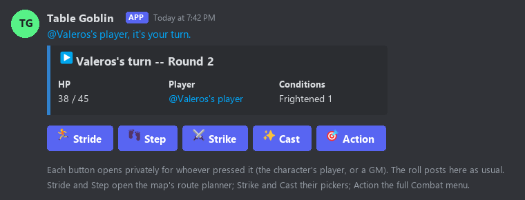

Your table has a goblin in it now.
Table Goblin is a Discord bot for running Pathfinder 2e. It does the bookkeeping, from initiative and conditions to the multiple attack penalty, treasure and coin, so the table can spend its time on the game.
What it does
- Build a character in Discord or on the site. Pick ancestry (including versatile heritages), class, feats and spells one dropdown at a time, plan every level on the wiki's Character builder (tick the books you own and it offers only their content, or see which books your build uses), and keep a live sheet. Already have a Pathbuilder sheet? Import it, or print a readable list of what you picked at each level.
- Play from chat. Type
pc::"grins and swings"{strike}and the bot rolls it as your character, under their own name and portrait. About 90 feat actions are also in your ability list. - Run encounters. Initiative, conditions, saves, reactions and the dying rules, with critical specializations, persistent damage, afflictions, auras and polymorph battle forms worked out for you.
- Use battle maps. Walls, terrain, magical light and darkness, daylight and fog of war, with cover, flanking, falls and forced movement worked out for you. Prepare maps on the wiki's Map prep page.
- Craft, earn and travel between fights. Craft items over downtime days with formulas, helpers, upgrades and reverse engineering; buy merchant upgrades; Earn Income, Subsist, Treat Disease and Repair; an optional cost of living; and a travel-time calculator that moves the campaign clock.
- Pull in creatures and NPCs. Take any bestiary creature or build your own, with stat blocks kept GM-only, plus animal companions, familiars, eidolons, constructs, vehicles and siege weapons.
- Handle loot, shops and towns. Treasure payouts with unidentified magic items, a shared party fund, packs you can set down and pick up again, and generated towns with their shopkeepers.
- Let the GM set the table's rules. Variant rules (free archetype, ancestry paragon, automatic bonus progression, gradual boosts), rarity, the books players may build from, a party level cap, sell rates and the cost of living, shared with players as a campaign code.
Premium soon. The character builder and battle maps will become premium features. They are free while we test them.
Recently added
Nov 12, 2026
- Ancestry feats now do their work: Focus Point refills (Energized Font, Well of Potential, Dissolution's Clarity), Dance Against Fear, Mask of Fear, Thousand-Year Grudge (sickened instead of frightened), temporary Hit Points (Absorb Strength, Feed on Pain, Form a Flock), Guided by the Stars (roll twice), Community Knowledge, Nanite Surge, Incredible Improvisation, Elemental Assault (+1d6 of an element), Destroy Resistance (resistances -5), Terrifying Croak and Threatening Pursuit (Demoralize), Jotun's Grasp, Prompt Pratfall, Friendly Nudge, Squirm Free, Fierce Grasp, Telekinetic Slip, Planar Sidestep, Withstand the Storm, Preemptive Reconfiguration, Sheltering Wing, Stone Bones, Iivlar's Deflection, Collapse, Heat Wave, Histrionic Injury and Reflective Defense (the attacker saves or is stupefied / dazzled), Mistaken Identity (roll twice), Moisture Bath, Skin Split and Resilient Physiology (end persistent damage), Cringe (a crit's damage drops by your level + 2), Spark Fist, Spark of Independence, Frenzied Dance, Polymorphic Escape, Shed Tail, Tumbling Diversion, Absorb Toxin, Elemental Bulwark, Invigorating Melody (+5 feet of Speed), Envenom Strike (+2d6 poison on the next hit), Energize Bite, Strix Vengeance (precision dice against the enemy that crit), Drag Down, Steal for the Depths, Ill Tide and Harbinger's Caw (the target rolls twice, worse kept), Grovel (a Feint from 30 feet), Tongue Disarm, Tail Snatch, Tail Spin (Trip two creatures), Arcane Slam (slam the creature you hold), Quick Recovery, Call to Battle, Watchful Gaze, Oni Rampage, Wood Ward, Razzle-Dazzle, Purge Sins, Venom Purge and Germination of Resolve.
- More ancestry actions: Revivification Protocol and Kashrishi Revivification (back to 1 HP while dying), Coral Detoxification (a save against a poison now, +2) and Purge System (the poison drops a stage), Fierce Competitor, Stonewall, Roll with It, Sudden Mindfulness, Hunter's Defense (the attack targets your Nature DC), Heroic Presence (12 temp HP for up to 10), Fox Trick, Mineral Deposits (unarmed Strikes count as cold iron or silver), Umbra Ally (your shadow flanks), Alluring Performance, Snare Commando, Phantom Charm, Mask of Rejection and Cannibalize Magic.
- Starfinder class feats: Solar Barrage (three solar flare Strikes at -2), Distant Flare and Homing Mote (the solar flare's range), Harmonic Convergence (temporary HP after a disharmony action), Unstoppable Directives (Steel Yourselves! gives your level more) and Pardon Me (Tumble Through with Deception against Will; the foe is suppressed).
- Skill feats: Comforting Presence (take an adjacent ally's fear onto yourself), Skeptic's Defense (counteract a mental effect with Intimidation), Say That Again! (Shove the fool), Comical Recovery (Performance to stay on your feet), Seasoned Command (an extra reaction to Aid), Legendary Negotiation, Root Magic (an ally's first save against a spell today) and Tweak Appearances (an item bonus to Diplomacy and Performance).
- More class actions: Dance of Thunder (each hit buys another Step-Strike-reload set, then fatigued), Ostentatious Reload (Performance against an easy DC), Distracting Spellstrike (a Feint with Arcane Cascade's bonus first), Scoundrel's Surprise (the fooled are off-guard to you), Steal Essence, Steed's Toppling Strike (your steed's Strike knocks Prone), Blazing Streak (four foes, fire sparks), Pinning Fire (Reflex or immobilized), Flying Kick, Impressive Landing (5 bludgeoning and off-guard around you), Blast Lock (shoot the lock against its DC) Accompany (pay for an ally's spell with Performance), and the inventor's Explosive Leap and Haphazard Repair (unstable: the flat check is rolled, and a malfunction stops them), and the wizard's Spell Protection Array (+1 to saves against magic) and Shared Focus (a temporary Focus Point for an ally); the druid's Raise Menhir (+2 to saves against a tradition) and Defensive Dismissal (drop your form, the crit becomes a hit), and the barbarian's Giant's Lunge (10-foot reach while raging).
- Blazing Mutagen and Dragon Shape: Quick Alchemy now offers Blazing Mutagen as an additive for a mutagen; drinking it sets you burning (2d4 persistent fire), and while it burns your melee hits add 1d4 persistent fire. A druid with Dragon Shape picks bludgeoning or poison on the Choices panel and resists it 5 while in Untamed Form.
- Pack Attack and Shadow Master on the map: a werewolf's Strikes add 1d4 precision when two of their allies have the target in reach; a Shadowdancer with Shadow Master has resistance 5 to all damage but force and ghost touch while standing in dim light or darkness.
- Cartomancer harrow omens are tracked: Harrow Reading (your daily reading) and Restore Omen draw your omen (or take the suit you drew from a real deck; Reading the Signs draws two). Vengeful Spirit Deck and Benevolent Spirit Deck use its damage type, draw a card for the matching-suit bonus, and the omen ends with the deck; Cartomancy Casting draws the card, names its enhancement and loses the omen on a failed flat check.
- Character builder choices stay changeable: a Draconic sorcerer's dragon exemplar (and its tradition) stays on the Bloodline step after you pick it, showing your pick, so you can change it; a new tradition clears a dragon of the old one. A feat's or heritage's follow-up answers (a skill, a dragon, a damage type, a cantrip) get a ↺ Change button that asks them again, in the builder and when leveling up.
- Starting gear shop: every vendor now has its whole list, 25 at a time, with ◀ Previous and More ▶ buttons. Rations, candles, chalk and other everyday supplies are under Adventuring Gear (they were filed with the alchemical items). The Adventurer's Pack says what's inside it, and the Gear tab shows a backpack with everything it holds.
- Character builder spells: each rank's spell list pages the same way, with Previous and More beside Search.
- Archetypes that were missing pieces: Kineticist Dedication now asks for your element on the sheet's Choices panel and puts your Elemental Blast on your Strikes (one damage die, plus one per Improved Elemental Blast), with Channel Elements to open your aura. The Symbiote Host archetype gets Spit Ambient Magic (damage applied), Repel Ambient Magic, the four pulses (Administer, Drape, Turn Aside, Devour Ambient Magic) and all five mutations (Deadly, Propulsive, Versatile with its energy type on the Choices panel, Spraying, Chaining). The Stellar Dancer gets Stellar Dance Stance: Performance for Escape and Tumble Through, and a success brings your dance to its zenith (agile, finesse and unarmed Strikes add force damage), plus Dance of the Wanderers, Dance of the Galactic Whirl, Dance of the Eclipse and both Figures. The Stone Brawler gets Stonestrike Stance, with Ore Fists, Adamantine Fists and Stonebane.
- Multiclass dedications: Investigator Dedication now gets Pursue a Lead and Clue In, Rogue Dedication gets Surprise Attack, Monk Dedication (and every monk) gets Powerful Fist's d6 fist, and Swashbuckler Dedication picks a style on the Choices panel so Tumble Through and the style's actions grant panache.
- New archetype actions: Cycle Elemental Stance (Five-Winds Vanguard) with Renewing Cycle's temporary Hit Points; Slayer's Identification (Undead Slayer) with Slayer's Presence's free Frighten Undead; Fine Print, Annul Compulsion and Painful Spell; Quick Harvest and Silo Crop (Flower Tiller); and Clarify Hellfire, Reckless Riding Lunge, Ride-By Recovery and Sunless Slide.
- Treat Condition (Medic) now treats: a Medicine check against the condition's DC lowers clumsy, enfeebled or sickened by 1, or by 2 on a critical success (a critical failure raises it). Holistic Care adds frightened, stupefied and stunned.
- More archetype feats: Expansive Spellstrike, Demanding Challenge and Daring Flourish, Accurate Swing, Mastermind's Eye, Menacing Prowess (Demoralize several at once), Sacred Weapon, Spiritual Flurry, Dual Onslaught, Fracture Timeflow, Terrifying Mien, Echoing Fury, Instrument of Death, Healing Sanctuary, Voice of Authority, Coordinated Tactics (you and your follower flank together), Nature's Precision, Palatine Strike and Palatine Enchantment, Expert Disassembly, Bullying Staff, Arcane Sensitivity, Axe Thrower (your one-handed axes in the Throw menu), and Snow Step and Greater Snow Step on the map.
- Hellbound, Pactbreaker and more: Call Hellfire (a 10-foot emanation of fire plus persistent spirit, basic Reflex, damage applied), Infernal Anguish (right after a successful Demoralize while doomed), Dispute Terms (lower your doom; your next roll is misfortune), Condemn Soul (weakness to fire and spirit that only you trigger, or anyone on a critical failure), Submit to Shadow (when you would die: stay up, heal 6d8, frighten the enemies watching), Tragic Lament, Watch This! (+2 damage per die on your promised Strike), Crop Protection, Fumigate (persistent bleed; a critical hit disarms and frees your crop) and Abrasive Drag (your mount trips and drags your captive).
- Clawdancer and Chronoskimmer: Storm of Claws, Claw and Talon Flow, Talon Sweep, Feline Dance (the Reflex save rolled twice), Hunting Snag and Wheeling Grab use your stance's Strike and switch stances for you. Borrow Time (quickened, then stunned 1 when your turn ends), Guide the Timeline (fortune for an ally, misfortune for a foe), Reset the Past, Space-Time Shift, Escape Timeline and Superimpose Time Duplicates (you flank everything in reach).
- Winged Warrior, Thlipit Contestant, Marine Marauder, Veil Dancer: Pluck from the Sky (a Reflex save or the flier falls; falling damage on a critical failure) and Cratering Drop (double falling damage), Bombing Run (splash to everyone within 10 feet), Redirecting Draft, Snap Falling Fruit and Aquatic Pirouette (+2 AC against that attack), Whirling Clobber (every Strike at one penalty, then the captive is released), Slurp Up, Reactive Tangle, Shark Attack, Aerial Flash, Warp Path, and more.
- Mortal Herald, Prophesied Monarch, Knight Vigilant, Werecreature: Herald's Strike (a Will save for spirit damage, dazzled, drained or blinded, one degree worse on a critical hit), Guiding Words, Heraldic Proclamation, Marked for Rebuke (weakness 10 to all damage), Deific Font and Flash of Omnipotence; Might of the Realm (+2 damage per knight), Fated Duel and the Decrees; Body Barrier (cover for your allies, weakness for you), Emissary of Peace and Lead the Way; Antler Rush, Dire Growth (Enlarge while in animal shape), Feral Scramble, Pouncing Transformation, Rapid Hybridization, Rushing Boar and Shared Tide.
- Hellknight orders, Golden Legionnaire, Aldori Duelist, Dandy, Celebrity, Captivator: Shackles of Law (Strike, then Grapple at the same penalty; a flail turns a success into a critical success), Spiritual Disruption (persistent spirit and stupefied), Diabolic Certitude, Commitment to Valor (stupefied instead of fleeing), Commitment to Vigilance, Duelist's Form (quickened), Tempo Duelist (concealed), Distracting Flattery (Deception against Will), Such a Disgrace! (the ally rerolls the Will save), Bloom Cabaret Entrance, Command Attention, Never Tire, Effortless Captivation and Look Again.
- The last archetype actions that only posted their text: Earth to Heavens Strike (two Strikes: clumsy, then stupefied), Exaltation Overwhelming (frightened 3), Finish Their Story! (a lesser foe dies), Wrath of the First Ghoul (a 10th-rank Power Word Kill on a hit), Rallying Charge (Marshal), Path of Iron (three foes at one penalty), Recollect Studies (it tells you the weaknesses), Running Tackle, Impose Order (Infernal Pactbreaker), Define “Report” (reroll a failed Deception with Diplomacy) and the rest of the Ghoul, Ghost, Knight Reclaimant, Pathfinder Agent, Sniping Duo, Spellshifter, Beastmaster and mythic feats.
Nov 11, 2026
- Fix: Draconic sorcerers in the character builder. The builder now asks for your dragon exemplar (its tradition, then the dragon), and the cantrip and spell pickers appear once it's chosen. Before, a Draconic sorcerer got a text box instead, and no spellcasting on the finished sheet.
- Fix: weapons from a Table Goblin recipe. A weapon the recipe had equipped now gets its Strike when the character is imported (you used to have to unequip and equip it), and a second equipped weapon goes to your off hand.
- Fortune and misfortune everywhere a skill check rolls: Trip, Shove, Grapple, Disarm, Reposition, Tumble Through, Demoralize, Feint, Recall Knowledge and Escape now roll twice under a "roll twice" effect, as other skill checks already did.
- Champions: the Justice cause's Retributive Strike now makes its Strike (name the enemy, pick your Strike); Nimble Reprisal allows a ranged one. Flash of Grandeur puts Revealing Light on the named enemy. Melee reactions (Reactive Strike, Stand Still...) refuse a ranged weapon unless you have Snap Shot and the target is adjacent.
- More class feats: Strategic Repose, Elemental Evolution, Courageous Assault and Shared Assault, Shared Clarity, Assured Knowledge, Lasting Armament, Energized Spark, Sanctified Soul, Verdant Weapon and Pristine Weapon, Combat Assessment, Observational Analysis, Unrivaled Analysis, Perfected Evaluations, Group Taunt, Shield Wallop and Devastating Shield Wallop, Variable Core, Invert Harm, Improved Knockback, the Sorcerer's blood magic feats (Explosion of Power, Propelling Sorcery, Terraforming Trickery, Reflect Harm, Blood Sovereignty, Blood Ascendancy), Boundless Reprisals, Greenwatcher, Warden's Guidance, Companion's Cry, Focused Fascination, Shielded Stride, Derring-Do, Megaton Strike and Gigaton Strike, Overdrive Ally and Shared Overdrive, Eliminate Red Herrings, Megavolt, Water Step and Convergent Tides.
- Every skill action is now in
{action}: the whole Skill Actions table from the GM Screen is in the Skill Actions category: Balance, Climb, Swim, High Jump, Long Jump, Lie, Request, Coerce, Make an Impression, Gather Information, Identify Magic, Decipher Writing, Pick a Lock, Steal, Track, Treat Poison and the rest. Type{request},{climb}or{action: lie}, or pick it from the Combat menu. Each rolls exactly as/tgcheck … action:does, with your feat bonuses for that action. Pick a creature and its defense is the DC (Request against Will, Lie against Perception, and an NPC's attitude moves); otherwise give a DC. An action more than one skill can roll asks which one. - The basic actions too: Avert Gaze (+2 to saves against visual effects until your next turn), Arrest a Fall and Grab an Edge (reactions:
Acrobatics or Reflex against the DC), Crawl, Leap, Fly and Burrow (with the map's move planner), Interact, Release, Delay, Sustain and Dismiss, and an
Exploration Activity entry for the travel activities.
{mount},{hustle}and{scout}work as words too. - Guardians: Taunt works on its own now. When your taunted enemy attacks or casts at an ally and not you, its attack roll or spell DC takes the -1 and it's off-guard until its next turn, with no GM bookkeeping. The taunt ends at the start of your next turn. Bodyguard: pick your charge from the Combat menu, and the penalty is -2 against them.
- Kineticists: Elemental Blast's damage type is a real choice. A two-type blast (electricity or slashing, say) now deals its first type, so resistances and weaknesses apply. Switch with Versatile Damage Type. Versatile Blasts adds your element's extra type.
- Clerics: Divine Castigation. Your Heal or Harm deals spirit damage to a creature with the opposing holy or unholy trait, even a living fiend your Heal would otherwise heal. Castigating Weapon then gives your Strikes the trait and extra spirit damage for the rest of the turn.
- More class feats: Capture Magic, Cascading Ray, Killshot's Report (Magus); Foreseen Failure (Psychic); Denier of Destruction (Cleric); Reflexive Stance and Opening Stance (enter a stance free when initiative is rolled); Portents of the Haruspex (Witch: the foretold damage type really is a weakness); Blood Rising; Instinctive Support; Quick Shield Block; The Unholy Dead (unholy thralls with extra spirit damage); Raise Haft; Plum Deluge; Wings of Bone and Sinew; Instant Army; Instinctual Creation; Quaking Stomp; Second Thoughts; Tenacious Blood Magic.
- Plan whole encounters on the site, and start them with one command: the new Encounter builder page
builds a fight for your party (Pathfinder 2e, Starfinder 2e or both): creatures from the bestiary as weak, normal or elite, your own
NPC builder creatures too, and its XP rating from Trivial to Extreme, the same one
/tge beginshows. The Map prep page now places those creatures on your map. How it fits together:- Map prep: load the map image, paint its terrain, download the terrain file.
- Encounter builder: add the creatures, export the encounter file.
- Map prep, step 5: open the encounter file, click each creature onto its square, download it again.
- Discord:
/tgmap upload_gridlesswith the image, the terrain file asterrain_file, and aslot. - Discord:
/tge start map_slot:that slotencounter_file:the encounter file. The map goes up and every creature is made, joins the fight and stands where you placed it.
- Swashbucklers: Tumble Through and your style's actions (Feint for a Fencer, Demoralize for a Braggart, Grapple, Shove and the rest for a Gymnast, and so on) now give you panache on a success, or until the end of your next turn on a failure, with Stylish Combatant's +1. Disarming Flair makes Disarm count too.
- GM screen: each group of sections and each section on the GM Screen page folds away, and it's in every page's top bar.
- More class feats: Collateral Reinforcement, Summoner's Call, Reactive Dismissal, Protective Pose, Reason Rapidly, Turn Away Misfortune, Connect the Dots, Storm Retribution, Scatter Swarm, One for All, Rapid Response, Warden's Boon, Additional Recollection, Manifold Edge, Lessons of Flux, Wandering Thoughts, Helpful Tinkering, No! No! I Created You!, Siphon Power, Bond Conservation, Spellbinding Speech (and a creature that can't use reactions now really can't), Rapid Spark, Fly on Shadowed Wings, Blanket Defense, Swift Banishment, Conduit of Void and Vitality, Affliction Mercy, Ultimate Mercy, and Invigorating Elixir with its Improved and Supreme versions.
- GM screen: a rules reference for the GM, with conditions, DCs by level, simple DCs, bonuses, actions and more. Tick the sections (and parts of them) you want. It's on the site as the GM Screen page, and in Discord as the 📖 GM Screen button under the GM dashboard or
/tgm screen, which remembers your choice. - GMs and players:
/tgm gm add|removeand/tgm player add|removereplace the four old add/remove commands, and take several people at once, comma-separated (@mentions, names or IDs). The old ones stay on the handbook, marked retired, until Nov 25. - New campaigns in one step:
/tgm campaign_createnow takesinclude_voiceandinclude_dice, so the GM, roles, channels, voice and dice channel all come from the one command./tgm setup_channelstakesinclude_dicetoo. - Champions: Mercy and Greater Mercy counteract a condition on a 2-action Lay on Hands. Cruelty and Security work, Expand Aura widens your aura to 30 feet, and Enforce Oath is on the Combat menu.
- Rerolls and saves: Just One More Thing and Impossible Technique offer the Reroll button. No!!! works, and All in Your Head rolls your next Fortitude or Reflex save as a Will save.
- Bards: Combat Reading (a secret Occultism read of an enemy), Misdirecting Composition (a Feint with Performance) and Reverberate (sonic damage turned back on its source).
- Summoners: Boost Eidolon adds its +2 damage per die to the eidolon's unarmed Strikes, and Blood Frenzy works.
- Oracles and casters: Waters of Creation, Thousand Visions (no flat check against concealed creatures within 30 feet), Glean Lore (a secret Religion check the GM answers), Forestall Curse, Spirits' Interference, Coven Spell, Tap into Blood, Transpose, Rippling Spin and Energetic Resonance.
- Everyone else: Pointed Question, Make 'Em Sweat, Alchemical Shot, Merciful Elixir, Negate Damage, Unstable Redundancies, Desperate Resuscitation, Swipe Souvenir, Mirror Shield, Reflecting Riposte, Desperate Surge, Rapid Assessment, Divine Disharmony, Rallying Banner, Born to the Trees and Return to the Sea.
Nov 10, 2026
- Turn buttons: the turn post, the player's turn reminder and the GM's alert for an NPC's turn now carry Stride, Step, Strike, Cast and Action buttons. Each opens privately for the character's player or a GM: Stride and Step open the map's route planner, Strike and Cast their pickers, and Action the full Combat menu. The roll posts in the channel as usual.

A mockup of the turn post with its buttons. Each one opens privately for whoever pressed it. - Save rerolls: a save you roll with a spell's Roll save button, or one rolled for you inside someone else's action, now offers the Reroll button too. Halfling Luck and Turn Back the Clock cover saves, and Cat's Luck, Minor Omen, All This Will Happen Again, Acquired Tolerance, Liberated Mind and other save feats are offered when they fit.
- More class actions on the Combat menu: Arcane Cascade, Unleash Psyche, Overdrive, Taunt, your champion's reaction, Fling Magic, Ring Bell, Untamed Shift, Monk stances, Blood Magic and others that only worked as chat triggers. New ones too: the Inventor's Explode (with its unstable check) and Offensive Boost, the Kineticist's Channel Elements (the aura stays up until an overflow action ends it), the Investigator's Pursue a Lead, Clue In, Devise a Stratagem and Quick Tincture, Command a Construct and Act Together.
- Psychics and witches: psychic amps work, along with a psychic's Refocus. The witch familiar's activities and Share Weakness are on the Combat menu.
- Holy and unholy: a holy Strike now hits a fiend's holy weakness, and resistance to unholy works. A champion's cause or deity sets their holy or unholy trait, and a champion whose deity allows either picks it on the sheet's Choices panel. Aura of Righteousness and Aura of Faith work.
- Auras and ally reactions: Area Armor, Glorious Banner, Selfless Parry, Shared Avoidance and Educate Allies give their bonuses to the allies they cover.
- Skill actions: Create a Diversion is on the Combat menu and makes you hidden from each creature you beat until the end of your turn (Lengthy Diversion, Distracting Performance and Fleeing Diversion included). Also new: Fascinating Performance, Advanced First Aid's Reduce Frightened and Reduce Sickened, Perform (Enjoy the Show), Demoralize (Decry Thief), Nimble Crawl and Tumbling Teamwork.
- Reactions against ranged attacks: Hit the Dirt!, Deflect Projectile, Cut From the Air, and Arc of Destruction are on the Combat menu and raise your AC against the next ranged Strike. Foresee Danger makes the next Strike against you target your Perception DC instead of your AC.
- Rangers and rogues: Double Prey, Shared Prey and Triple Threat let you hunt more than one prey or share it with allies. Distracting Shot also counts two ranged hits in one turn. Rogues get Bullseye, Enduring Debilitation, Preparation (an extra reaction for rogue reactions) and Sawtooth Grapple.
- Alchemists and poisons: Pernicious Poison and Combustible Poison can be mixed into a poison with Quick Alchemy. Sticky Poison, Pinpoint Poisoner, Burning Cascade and Resurrectionist work too.
- Summoners: Phase Out gives the eidolon its resistance while it can't attack, and Bloodletting Claws and Hobbling Criticals trigger on its critical hits.
- Feat choices: Hold Mark's emblem and Fey Influence's creature are asked when you take the feat, and they now give their save bonus, trained skill and innate spell. Some granted Strikes had odd names (a Strongjaw Kobold's jaws, for example), which are now fixed.
- Natural 20s and 1s on flat checks: a natural 20 or 1 on a flat or recovery check now moves the result one step, the same as on any other check.
- More feats that work by themselves: Burn It!, Strix Defender, Enlarged Chassis, Flowing Palm Deflection, Free the Bound, Lesson of the Hurricane's Might, Hone Claws, Envenom Fangs, Athletic Strategist, Rod of Rule and others.
- Shield and armor reactions: Clang!, Armored Counterattack, Brandishing Draw, Reactive Shield, Emergency Targe, Channeling Block, Shield Salvation, Shield of Grace, Greater Interpose, Sacrifice Armor and Perfect Protection are on the Combat menu and do what they say.
- Lay on Hands: applying it to Hit Points now heals the target, and Heal Mount works on your mount.
- Commanders: Guiding Shot, Set-Up Strike, Targeting Strike and Fortunate Blow set up an ally's next Strike against the target, and Punishing Shove works.
- More class feats: Healing Bomb, Clotting Elixirs, Clue Them All In, Breached Defenses, Divine Wall, Knight's Retaliation, Divert Streamflow, Just a Flesh Wound, Miracle Worker, Ultimate Skirmisher, Long-Distance Taunt, Swift Elusion and Whirling Throw, plus eight more class stances. Battle Assessment is a secret check that tells you an enemy's highest weakness or resistance, lowest save or an immunity.
Nov 9, 2026
- Class commands moved to the Combat menu: the per-class commands (
/tgwizard,/tgbarbarian,/tgthaumaturge,/tginnovationand the rest) are retired. Every action they had is in your sheet's Combat menu, or by name in chat as{action:Name}. For a few weeks each old command still answers, privately, where its action went. Set-up choices (a Barbarian's instinct, a Thaumaturge's implements and Adept, an Exemplar's ikons, an Inventor's innovation and its modifications, a Warpriest's shield, a wayfinder's spells) are on the sheet's Choices button, with the same rules as before. Sixteen class actions that no one could reach before (Living Nexus, Undead Master, Guerrilla, Undersea Privateer, Battle Harbinger, Animist) are in the Combat menu too. - Rerolls: when a check or attack you make fails, the post offers a Reroll button: a Hero Point, or a reroll feat you can use right then (Halfling Luck, Turn Back the Clock, Let's Try That Again, Spiritual Guides, Scholar's Hunch, Courteous Comeback, Clean Take, Archaeologist's Luck, Perfect Clarity). It takes the first attempt back, with whatever it did, and makes the same action again; the new result stands (Perfect Clarity keeps the better one). Only your player or a GM can press it, and not after something else has happened to those creatures. The Boosted Reroll campaign rule applies to a Hero Point reroll. A failed save still uses Spend a Hero Point.
- Rituals: Learn a Ritual (Combat menu, Magic) adds any of the 174 rituals to what your character knows, with your GM's say-so. Cast a Ritual, in the Combat menu and in an open break's downtime list, leads one: it checks your rank and skill and the secondary casters, then posts the ritual. Each secondary caster presses a button to roll their check (a critical success gives +2 to the primary check, a failure -4, a critical failure -4 and one step worse), then the primary caster rolls against the ritual's DC, the cost comes out of their purse, and the post gives the ritual's result. Ritual feats add their bonuses.
- Multiple attack penalty: feats that make several Strikes now use both of your weapons and their own targets: Double Slice swings each weapon, Double Shot can split targets at -2, Triple Shot is an option on Double Shot, Impossible Flurry takes its own penalties, and Twin Takedown, Hunted Shot and Time Dilation Cascade combine damage against one creature before resistances. A feat that holds the penalty steady now counts each Strike afterwards, so the next attack takes the right penalty (it used to count only one). Twin Shot Knockdown knocks Prone and Triangle Shot causes bleeding when every Strike hits. New in the Combat menu: Nimble Strike, Banishing Blow, Spell Swipe and Split Spellstrike.
- Raised shields: Raise a Shield now carries your shield feats while it's up: Reflexive Shield's bonus to Reflex saves, Necromantic Deflection and Necromantic Bulwark, Shield Your Eyes, Emblazon Antimagic. A tower shield gives +4 when you Take Cover with it raised, a fortress shield +3 raised and +4 with Take Cover, and Great Shield Mastery gives that without Taking Cover. Shield Paragon's shield is always raised. Shield Warden can Shield Block for an adjacent ally, and Golden Legionnaire's bonus against Grapple, Reposition and Shove works while the shield is up.
- Feats that follow what you do: Bestiary Scholar, Puzzle Solver, Wild Mimic, Trailblazing Stride, Avowed Insight, Sixth Pillar Mastery, Shielded Recovery and Phenom's Verve now give their bonus by themselves after the roll that earns it, and Lock On gives your construct its attack bonus.
- 68 more feat bonuses: feats whose bonus depends on something only your table knows (Different Worlds' second identity, Hazard Finder's traps, Exhort the Faithful, Wary Disarmament, That's Not Natural!, Predict Weather, Sow Rumor ...) add a toggle to the sheet, and the bonus applies while it's on. Saves against a kind of effect now count by themselves (Witch Warden against curses, Illusion Sense, Safeguard Soul, Pervasive Superstition), and Cynical makes you harder to Lie to.
- Map prep page: each section can be collapsed again, so the terrain palette sits next to the map once the image and light are set; the page remembers which sections you folded.
- More feat bonuses apply on their own: a feat whose bonus covers several things now gives all of them (+1 to Crafting, Performance and Will saves), skill-check bonuses from feat actions count, and a bonus meant for allies goes to the allies you pick when you use it. Bonuses from a sheet toggle or the terrain you stand in now count on AC, saves and initiative too, such as Daredevil's Gambit's +2 AC while you share a foe's space. 22 more feats work, among them Tip the Scales, Familiar Foe, Lost in the Crowd, Raise a Tome and Glyph Expert; a condition the bot can't see becomes a toggle on the sheet.
- Every class action in the Combat menu: all 110 actions from the per-class commands (
/tgbeastmaster,/tgspiritwarriorand the rest) are in the Combat menu, Pack Takedown and Iomedae's Valor included. In chat, any ability's name in braces with the spaces taken out runs it, such as{justasplanned}. - Starfinder: an Operative with Urban Operator ignores difficult terrain on urban map squares (greater difficult counts as difficult). A Solarian's successful Fortitude or Will save against a mental or incapacitation effect reminds them that Stellar Resilience lets them Attune as a free action. A Mechanic always counts as having a repair toolkit (Custom Rig), so Install Upgrade is always offered.
- Equip menu: picking a weapon, armor or shield from the Gear tab's Equip menu no longer fails with "This interaction failed" when the bot is slow right after a restart.
- Recipes for every character:
/tgchar export format:Recipenow works for characters that never had a recipe (Pathbuilder imports and characters made before recipes). The bot works one out from the sheet, and the file opens in the character builder; anything it couldn't place (a background that was never recorded, an empty feat slot) is listed, and the builder asks for it. A worked-out recipe can't be used with/tgchar levelup tg_file. - Level-up applied once: pressing Apply twice for the same level no longer applies it twice; the second press says the level is already applied. The two characters it had happened to were put back.
Nov 8, 2026
- Terrain on the map:
/tgmap terrainhas an Environment group: forest, jungle, underbrush, swamp, desert, sand, snow, ice, mountain, rocky ground, rubble, plains, urban and underground. Each shows as a small two-letter badge in the square's corner and costs nothing to move through by itself (paint Difficult as well where the going is hard). A creature standing there is in that terrain for its feats and gear, on top of the campaign's or fight's environment, and water counts as aquatic. The Map prep page has the same brush. The/tgm environmentand/tge environmentpickers also gained urban, rubble, underbrush, rocky, sand, ice, water and ocean. - Terrain feats: Terrain Expertise, Terrain Stalker and Favored Terrain ask which terrain when you take them. Bonuses that depend only on where you are or what you face now count on any matching check, a plain
/tgcheckand the sheet's skill rolls included: Terrain Expertise's +1 Survival in its terrain, Wildwood Ink and Root Boots in a forest, Stormshard against undead, and an instrument's bonus while you tick "playing" in the sheet's toggles. - Choices on the sheet: the Overview tab has a Choices button (it says "Choices · 2 open" while something is unanswered) listing every choice your class, archetypes and feats ask for: open ones, ones you can change there (a Dragon Instinct's dragon, a weapon implement's Strike), locked ones you change by retraining, and the ones you pick each day at daily preparations. A GM can set one for a player, and the bot says so in the channel.
- Splash and void: a spell attack's critical hit no longer doubles its splash damage (Percussive Impact, Exploding Earth), and Acid Splash's 1 splash acid is now rolled at all. A creature with void healing (undead, a dhampir, an undead companion) takes no void damage; only Harm and Touch of the Void heal it. Void Warp no longer heals a zombie.
- Water currents:
/tgmap terrainhas a Water current group: eight directions at 10, 20 or 30 feet, drawn as an arrow with a chevron per 10 feet. Moving against a current costs extra (difficult terrain at 10 feet, greater difficult faster), and at the end of a creature's turn the current carries it that far, stopping at walls, creatures and the map's edge. Creatures in the air aren't carried. The map prep page has a matching Water current brush. - Seeing underwater: a creature in the water sees 240 feet, or 10 feet in murky water (a new
murky-waterenvironment). Targets farther away are hidden from its attacks unless a precise sense reaches them, and the party's fog of war stops there. - Glimpse of Redemption: when the foe repents, your ally takes no damage at all from that hit (it was a note before). If the foe refuses, the ally still gets resistance 2 + your level.
- More two-round spells: Elemental Annihilation Wave, Horizon Thunder Sphere, Inner Radiance Torrent, Vampiric Revelry and Weapon Tide now work like Psychic Outburst: cast with 3 actions to start, then use Finish <spell> on your next turn for the bigger version, at the same rank and DC with no new slot. Elemental Annihilation Wave's damage now heightens by +1d6 fire and +3d6 bludgeoning per 2 ranks, as its text says.
- Feat actions that roll your skill: about 50 more feats now roll for you, among them Battle Prayer, Evangelize, Distracting Pratfall, Disturbing Knowledge, Sacred Defense, Reveal Machinations, Swimming Charge, Wing Buffet and Spit-Take. They roll your skill against the target's DC and apply the outcome; when the result lets you choose, the choices are posted for you. Just as Planned is now a real once-an-hour free action (the next Devise a Stratagem rolls twice and keeps the higher), Slippery Prey lowers the penalty on repeated Escapes, and Stifle Flames makes persistent fire end on a 10.
- Operatives: On the Move adds +5 feet to your Speed at 11th level and +10 at 16th, and Focused turns a successful Reflex or Will save against your Aim target into a critical success.
- Starfinder on the NPC builder, town builder and treasure planner: each page has Pathfinder 2e and Starfinder 2e checkboxes. The NPC builder offers Starfinder weapons, spells, gear and the Computers and Piloting skills (the creature numbers are the same in both games), and
/tgnpc bulk_addtakes the Starfinder weapons and the two skills, in a builder file or the CSV's newcomputersandpilotingcolumns. The town builder rolls a Starfinder station or colony with Starfinder stock and prices in credits. The treasure planner uses the Starfinder GM Core's credit amounts and draws a Starfinder item of each slot's level, since Starfinder has no treasure tables to roll on. - Starfinder settlements in Discord: in a Starfinder-only campaign,
/tgtown generaterolls space stations, colonies and spaceports: sci-fi names and sectors, shop signs, merchant names and hooks, from the local tables or from Gemini. Specialist shops include a tech shop and no jeweler, since Starfinder has no jewelry to stock. - Ammunition in stacks of 10, magical rounds one at a time: town shops, the starting-gear shop and the site's character and town builders sell ordinary ammunition (arrows, bolts, sling bullets, firearm rounds) as a stack of 10 rounds, marked "stack of 10", at the stack's price and Bulk; firearm rounds priced per 5 cost twice that per stack. Magical and alchemical rounds, which are priced each, are sold as single rounds at that price, marked "single round". Shelves stocked earlier are repriced automatically.
- NPC builder resistances: the resistance and weakness type list now offers splash damage, area damage, critical hits, persistent damage, energy and the special materials, so a swarm's "weakness splash damage" is one pick away. Strikes keep the plain damage types.
- Town builder on the site: the Town builder page rolls a settlement the way
/tgtown generatedoes: set the level and size, a level bonus for specialist shops, and whether uncommon or rare items may be stocked. Every town name, shop name, merchant, ancestry, personality and note has a 🎲 to roll just that again, and each shop can be restocked. Copy it as text or print it. - Treasure planner on the site: the Treasure planner page rolls a whole level's treasure (GM Core's Party Treasure by Level, on the official tables) for your party's level and size, with uncommon and rare items if you allow them, and splits it into as many encounters as you choose, each worth about the same. Any item can be rolled again.
- NPC builder power bars: the NPC builder's side panel shows how each number compares with GM Core's scale for the creature's level, offense and defense, whether it is weaker or stronger than its level, and which level it plays like.
- Mortal Weakness or Personal Antithesis: after a successful Exploit Vulnerability, the post has a button to switch to the other exploit, so the thaumaturge chooses knowing the creature's weakness. Once per Exploit.
- Diverse Lore: a successful Exploit Vulnerability also counts against the creature's Recall Knowledge DC, and if it would succeed you pick what you recall from a menu (delivered like Recall Knowledge).
/tgcheckhas a new Esoteric Lore action, Recall Knowledge (any topic), at the feat's −2. - Terms of Service and Privacy Policy: the description of an AI Game Master feature (which was never built) is gone. The Privacy Policy now says exactly which messages the bot looks at (only chat commands in campaign channels), and that
/tgtown generateasks Google's Gemini for town names and people unless you setai:False. - Recheck your character:
/tgchar recheckchecks a character built or leveled before an update against today's rules: class features for every level you've reached, feats and spells your class and feats grant, proficiencies, Strikes, spellcasting and AC. It shows what would change and why, and nothing changes until you press Apply. Your own choices are never touched. A GM can recheck another player's character, or everyone at once. - NPC builder in Discord:
/tgnpc buildbuilds a creature step by step. Pick a stat or skill, then a tier, and GM Core's number for the creature's level fills in. Add Strikes, spells, gear and abilities from short forms, then create as many copies as you need or download the draft as a CSV. - Copy a creature:
/tgnpc clonemakes copies of any creature (shark becomes shark2, shark3...), each with its own gear and at full HP. - A much fuller NPC spreadsheet: the
/tgnpc bulk_addCSV now takes up to 4 Strikes, 12 spells with slots, 6 pieces of gear, abilities, resistances and speeds, and any stat can be a tier word (high,moderate) instead of a number. A Strike named after a real weapon fills in its own die and traits. Download the template and column guide from the NPC builder page. - Creatures with Sneak Attack and Rage: a creature's Sneak Attack adds its dice by itself when it Strikes an off-guard or flanked target, and its Rage gives temporary HP, extra melee damage and an AC penalty. This covers the bestiary's rogues and assassins too.
- Thaumaturge fixes: Esoteric Lore now grants Dubious Knowledge, as it should (as do other class features that grant a feat, such as Tough To Kill's Diehard). After Exploit Vulnerability, Strikes against the creature count as magical, Mortal Weakness no longer applies twice to a Strike that already deals that damage type, and the Off-Guard from a critical failure ends at the start of your next turn. Existing Thaumaturges get Dubious Knowledge from
/tgchar recheck. - Turn nudges for play-by-post: set a turn limit (1 to 48 hours) in
/tgm campaign_rules. When a player's turn passes it, they are reminded; at twice the limit the GMs get Skip turn and Delay to end of round buttons. The bot never moves a turn by itself. A pinned turn board shows whose turn it is and since when. - Session recap:
/tgm recaplists what happened since the last recap: fights, loot, XP, and the gold and items each character gained. The GM sees a preview first. In a Society game it is also the Chronicle (player and character Society IDs, boons you add, items and gold per character) and can check every character back in. - Society characters: a home record can't be changed while its character is checked out to a table. Starting gear goes home straight away, and each home record has a sheet post in the home campaign showing where it is.
- GM dashboard: switch it on in
/tgm campaign_rulesand the GM channel gets one pinned summary: each PC's HP and conditions, the running fight, the party's XP and treasure, the last recap and Society check-outs. It updates itself as play goes on. - Undo buttons:
/tge damage,healandconditionresults carry an ↩️ Undo button for the GM. A/tgmap movehas one too, for the mover's player or a GM, and puts the token back. An undo is refused if the creature has changed since. - Encounter difficulty: GMs see a private Trivial-to-Extreme rating when they start, build or check a fight, with a warning for creatures far above the party. Players never see it.
- Complex hazards take turns:
/tghazard addputs a complex hazard into initiative. On its turn the GM gets buttons for its Strikes and saves. - Areas drawn on the map:
/tgmap areanow shades the area on the map, and can start from or aim at a square (a burst on an empty spot, a trap's cone). - Lookups and treasure:
/tglookupshows which books something is printed in and whether it is Society-legal. Rolled treasure now honors the campaign's chosen books. - Rules: only the highest persistent damage of each type applies (two bleeds: the higher one). Kneel Before the Rightful Heir ends only when the creature uses the new Drop Prone action and is still prone at the end of that turn, and saving against it gives 24 hours' immunity. Drop Prone and Stand are on everyone's Combat tab. Telling Blow and Breath of Hungry Death now take their damage off Hit Points, and Defy Chains doubles on a critical hit.
- Strikes from the sheet ask for a target: pick a creature (its AC is checked and the damage applied) or No target for an enemy you can't see yet.
Nov 7, 2026
- Every roll shows its math: checks, saves, initiative, Strikes, spell attacks, maneuvers, social and skill actions and class and feat rolls now show the total first, then the d20 and every bonus or penalty with its source:
18 = d20 [11] + 4 (STR mod) + 7 (trained, lvl 5) + 1 (status: Courageous Anthem) - 5 (MAP, 2nd attack). A GM's creatures still show the short version. - Damage by type: damage shows one line per damage type with its dice and sources, then the total:
13 piercing = 2d6 piercing [5,1] + 4 piercing (STR mod) + 3 piercing (weapon specialization)/3 precision (piercing) = 2d6 precision [1,2] (Sneak Attack)/6 fire = 1d6 fire [6] (flaming rune)/22 total damage. Spells with several damage types now apply resistances and weaknesses to each type, and a basic save halves or doubles each type separately. Persistent damage ticks show their dice too. - Rules fixes: bonuses of the same type no longer add together (feat bonuses now follow the stacking rules, and initiative no longer counts Frightened twice), splash damage is not doubled on a critical hit, area damage is rolled once for every target, Backstabber, Certain Stratagem and a failed Confident Finisher deal precision damage, ikon damage is spirit damage, Unfailing Bow's critical d4s are added after doubling, boost dice are not doubled, Piercing Doom, Electrogenesis and Telling Blow double their extra dice on a critical hit, Slay and Assassinate follow their death rules, and a formula with 0 dice deals 0. Flat persistent damage is dealt as that number each turn.
- Sustain buttons that last: the Sustain and Dismiss buttons on a turn ping no longer expire and keep working after the bot restarts. Unfailing Bow Strikes from the character sheet ask for a target, and Kneel Before the Rightful Heir is tracked until the creature drops prone.
- Menus that last: the character sheet and its panels (skills, runes, hands, equipment, deity, the favorite star, exploration), the loot claim menu, the GM's treasure catch-up, the build and level-up wizards, the starting-gear shop and the map painter now keep working after the bot restarts, for up to a week. Every click is checked again, and a menu that has gone out of date says so instead of failing. Only party members and GMs can claim loot, and big loot hauls now show a picker for every item.
- How lasting menus work: a button or dropdown used to be tied to a copy of its menu held in the bot's memory, so it stopped working after a few minutes, or when the bot restarted. Now each button carries a short label saying what it is and which campaign it belongs to, and anything bigger (a half-built character, a shopping cart, the map painter's brush) is saved in the database for up to 7 days. When you click, the bot reads that, checks again that it's your menu in your campaign and that nothing has changed since it was posted, and then carries on. Menus no longer sit in memory waiting to be clicked, which keeps the bot light as more tables join. Quick in-turn prompts, like reactions and moving a token, still expire after a few minutes, since they only matter in the moment.
- Search inside the retrain menu:
/tgretrain's feat, repertoire spell and signature spell menus now hold every choice, with a 🔎 Search button and page arrows under the dropdown, so you no longer have to rerun the command withsearchwhen the spell you want isn't in the first 25.
Nov 6, 2026
- Feybound and Vaultlines: the new Pathfinder #225 Vaultlines and Feybound content is in. Build Fauns, Gremlins and Nymphs, the Sprite heritages (renamed with “Sprite”) and Fadrim, with their ancestry feats, the Feybound backgrounds and the Trickster muse, in the bot builder, Pathbuilder import and the site builder. Heritages that grant a feat or a language now give it (about 45 older heritages were missing theirs), and a low-light ancestry with a low-light heritage no longer breaks a build. Creatures removed upstream stay available for older adventures.
- Content sources (which books count): every item, feat, spell and creature now knows which book it came from. A GM can restrict a campaign to chosen books from the Books button in
/tgm campaign_rules; anything from other books then stays out of that campaign's builds, shops and loot. Any printing of a book counts as that book, content that moved to a newer book in a reprint (Sprite, for one) still counts for the older book too, and Pathfinder Society and Starfinder Society home campaigns stay wide open. The site builder has a Books you own picker, and shows the books your current build uses while none are ticked. Books that Foundry adds later stay off in a restricted campaign until the GM turns them on. - Skills and Lores: Lore entry is manual everywhere (you type the Lore you want), and feats and backgrounds that grant a Lore ask for it. Lores advance on their own only when the source says so (Additional Lore, for example) and otherwise advance when you raise them. Starfinder has real Piloting and Computers skills. Skill and Lore pickers are tiered (Skills and Lores on top, then the rank) so they never run past Discord's 25-option limit, and feats that offer a skill or Lore at a higher rank ask only when the feat says so. Daily picks (Assurance, Lore swaps for Animist apparitions) are chosen during daily preparation.
- Strikes and maneuvers: a weapon with the Trip, Shove, Grapple or Disarm trait offers that maneuver before the Strike, with the weapon's potency bonus and the normal multiple attack penalty. Feats that Strike and then Shove, Trip or Grapple ask afterwards (with a Skip choice) except the ones that are one fixed sequence. Feats that offer another damage type ask which one. Bomb additives are chosen with Quick Alchemy, Versatile Vials count as reagents, and Known Weaknesses and Monster Hunter bonuses go to the right allies.
- More feats and rules wired: hundreds more class, archetype and ancestry feats now change real numbers and offer their actions, a healer's toolkit bonus reaches Medicine checks, Armor Proficiency feats and dedications are counted once, innate spells use Charisma, Detect Magic from Arcane Sense is the cantrip, and restricted skill increases (such as Erudite Warrior's) are enforced. Feats that need a mid-game choice raise a prompt instead of failing quietly.
- For GMs: a daily check of the game-data repository now looks for new releases and reports what needs review before anything goes live, so new books arrive sooner. Existing characters were updated for feats and bonuses they had missed.
- Water and swimming: creatures in deep water (or an underwater setting) now hold their breath: 5 + Con rounds, one round a turn, two after attacking or casting, and out of air they fall unconscious and make Fortitude saves against suffocation. Aquatic Combat applies (off-guard without a Swim Speed, resistance 5 to acid and fire, −2 to bludgeoning and slashing, no fire spells), falls into deep water are shorter, and Water Breathing, Air Bubble and Water Walk work. Map cells can hold up to four terrain layers (split diagonally or in an X), with a new deep-water terrain.
- Level-ups and XP: in campaigns that track XP per character, XP keeps counting past 1,000 and the GM is told who is ready.
/tgm levelupraises the party level, takes 1,000 XP off each character that has it (the rest carries over) and sends every player a message with the campaign code, their recipe file and a command to paste./tgm givegainedxpandxp_maxfor single or random awards. - Rules and stealth: persistent damage doubles on a critical hit and halves on a basic save, Seek and Recall Knowledge no longer break stealth while attacks, Steal, Coerce and loud actions do, Bane is strict, a Barbarian's Rage applies the instinct boost for their level automatically, Intimidating Prowess counts on Demoralize and Coerce, and
/tge damagecan mark damage magical and damage vehicles. Spells that move a creature ask the caster where it goes. - Class details: Mystic Bond needs an adjacent, willing creature, a champion's reaction resistance is applied to the triggering hit, a Strike with no hands recorded asks whether the weapon is already in hand, Psychic Outburst has a two-round cast, Pierce the Eye is an action, Spell Mastery spells can be retrained with
/tgretrain, and long spell lists are split into pages (“More…”). The terrain painter's dropdown is shorter: water depth, hazards, cliffs, light and darkness open their choices in the same dropdown.
Nov 5, 2026
- Damage and resistances work on real hits: resistances, weaknesses and immunities (physical, energy, all damage and their exceptions) now match what weapons and spells actually deal. Immunity to precision damage and to critical hits is respected, extra damage like a Flaming rune or a creature's "plus 1d6 fire" is resisted as its own type, and persistent, zone and affliction damage now go through resistance, temporary Hit Points and dying.
- Spells reach hit points and conditions: a cast message lists each target's result with an Apply to Hit Points button for damage and healing (Heal, Harm, Sorcerous Potency and the rest). Most spells with a saving throw now apply their condition on a failure, with incapacitation. Area spells affect the creatures in the area instead of the caster, Bless and Bane last their full minute, and Shield, Sure Strike, Resist Energy and False Vitality now work. Dispel Magic and 30 other counteract spells roll the check, and spontaneous slots and Focus Points are enforced.
- Conditions change numbers: a condition you gain again keeps the higher value, Off-Guard counts once, prone, grabbed, restrained, paralyzed and unconscious make you off-guard, frightened and sickened reach spell attacks and DCs, drained costs maximum Hit Points, stunned and slowed set your actions, creatures immune to a condition no longer gain it, and grabbed or immobilized tokens cannot move on the map.
- Medicine rules: Treat Wounds immunity is per patient and medic, Battle Medicine, Ward Medic, Continual Recovery and Unusual Treatment follow their feats, and healing never goes past maximum Hit Points. Medicine actions need a healer's toolkit or a stand-in (Vasodilation, Healing Plaster and others), and each toolkit adds its own item bonus.
- Character fixes: a level-up that raises Constitution adds the Hit Points, level-up recalculates your Strike bonuses, the Summoner, Necromancer, Runesmith and Magus proficiency increases now apply, Gunslingers use their firearm proficiency, Magus and Summoner spell proficiency follows the class, Wizards get their curriculum slots and school spell, Witches get their patron and lesson hexes, and feats that grant a focus spell now grant it. Toughness, Elf Atavism and many heritage effects that did nothing now work, and Pathfinder and Starfinder feats with the same name no longer mix.
- Gear, companions and eidolons: wands, scrolls and staves can be cast from, bought and looted gear keeps its runes and material, item bonuses no longer stack wrongly, Shield Block needs a raised shield, and weapons, armor and shields can be sold at the campaign's rate. Animal companion tiers build on each other and you are asked to pick Savage, Indomitable or a specialization, eidolons improve their saves and Perception and let you choose attribute boosts, and Druids and Rangers can Command an Animal. Versatile weapons let you pick the damage type.
- Map and creatures: senses from feats keep their range and acuity (Echolocation, Scent, a precise tremorsense in darkness), a Step is 5 feet and never triggers a reaction alert, range and cover change the hit, imported creatures keep their fly, swim, climb and burrow speeds and their spellcasting, and over 1,300 hazards now import with their checks and routines.
- Rules and actions: Aid is DC 15, Hero Points stop at 3, the party level cap applies to imports, a plain Recall Knowledge failure gives no answer (only a critical failure gives a false one), a failed Sneak keeps you hidden, and surplus XP carries to the next level. New actions: Take Cover, Ready, Administer First Aid, Assurance, Bon Mot, Recognize Spell and Kip Up. Twin, forceful, sweep, backswing, volley and misfortune work.
- Retraining and Automatic Bonus Progression:
/tgretraincan now retrain archetype feats and skill increases, and Automatic Bonus Progression asks for your skill potency and attribute apex picks. - Starfinder: all five Soldier fighting styles and the Operative specialization actions work, Install Upgrade and In Another Life are in, Grenade Specialist and Extra Enduring Mods are in, weapon, armor and shield grades now reach attacks, AC and saves, and ancestry innate spells were added.
- Society home campaigns: the home campaign for Pathfinder Society and Starfinder Society characters is now set explicitly, so another society game on the Table Goblin server can no longer break check-out.
Nov 4, 2026
- /tgchar tidy-up:
/tgchar printis now/tgchar sheet print:True, the field list from/tgchar update_fieldsis what/tgchar updateshows when you run it with nothing set (orexpression:help), and/tgchar createis gone (use/tgchar buildor/tgchar import). New:/tgchar leave_societysaves a society character back to its home campaign and takes it out of the game. - Society characters stay in sync: a character checked out to a society game has its home record updated every 12 hours, and once more when the game ends or the character is deleted, so nothing it earns at a table is lost. The home character keeps the same id throughout.
- Society characters: in a Pathfinder Society or Starfinder Society game, building or importing a character first asks for your Organized Play number and character number. The character is also saved in the society home campaign (with its familiar, animal companion or eidolon), so you never have to join that server. If those numbers already belong to one of your characters, the bot offers to check that character out to the game instead of building it again.
- Create a campaign and its channels in one step:
/tgm campaign_createcan now mark a Pathfinder Society or Starfinder Society game, pick an existing category or name a new one, name the GM (it is you if you leave it out), and build the channels straight away, or let you create, reuse or skip each one./tgm setup_channelsis still there. The Pactbound feat Crown of the Saumen Kar is now Crown of the Ice Witches. - Witchwarper archetype: the dedication asks for your paradox. Basic Warp Spell gives that paradox's initial warp spell, Basic Quantum Field adds its effect to your quantum field (a 10-foot burst for the archetype, 20 feet for the class), and the Advanced Warp and Greater Warp feats give its later warp spells. The Advanced feats of the Starfinder archetypes (Advanced Distortion, Gunner, Soldier Training and the rest) now ask which class feat you take, capped at half your level.
- Three display names changed: the Fighter class archetype Warrior of Legend is now Fated Warrior, the Pactbound Initiate feat Curse of the Saumen Kar is now Curse of the Ice Witches (its chat command is
{action:curse-of-the-ice-witches}), and the Ghost feat Headless Haunt is now Headless Revenant. Existing characters were updated. - Pick the category for a new campaign's channels:
/tgm setup_channelshas a new category option. A Pathfinder Society or Starfinder Society game puts its two forums inside the category you pick (for example Society Campaigns) instead of at the top of the server, and a Sandbox game builds in the category you pick instead of making a new one. - Open a saved character on the builder: the Character builder has a new "Open a saved character" box. Give it a recipe file (from
/tgchar exportin the recipe format, or the one in your level-up message) and it fills in every pick, so you can add the next level and download it again for/tgchar levelup. Levels the bot already has go back exactly as they were; if you change one, the page warns you that the bot will only accept that file for a new character. - Overwhelming Ego deals its damage: a psychic shock hit now carries the feat's 1d4 persistent mental damage (2d4 on a critical hit). The feat applies it only to the first hit each round against an enemy you sense with thoughtsense, so the roll says to ignore it on later hits.
- Choices for unarmed attacks, and a few more feats: Creative Combat and Enlarged Proboscis ask which two traits to give your unarmed attacks (or your proboscis). Fire Fighter and Intensified Psychic Shock ask which benefit you take (Broad Flame, Empowered Flame, Explosive Flare, Long-Range Flare; Extended Shock, Mind Crusher, Peer Pressure, Psychic Wave) and apply it to the attack. Alloyed Attacks asks for cold iron, silver or adamantine (13th level), and the metal your unarmed Strikes are made of now counts against resistances for Precious Alloys and Metal-Veined Strikes too. Hardlight Weapon asks for a form, a damage type and a weapon group, and gives you the attack. Each Commercial, Tactical, Advanced and Superior Customization feat adds a customization slot to a Mechanic's drone. Dire Armplates gives +2 to Demoralize while you tick "Your armplate is raised". Rebound Kinetic Energy (from Kinetic Resonator) is a reaction that releases 1d4 force per 10 damage you took in a 10-foot emanation, and Leverage Specs marks a creature you critically recalled knowledge about for your Intelligence modifier in rounds.
- More Starfinder feats that were left out: Flame Belch adds persistent fire (half your level) on a critical hit; Bug Bite adds persistent poison per die and makes your jaws d8 without finesse; Natural Hunter adds persistent bleed per die on a critical hit with your jaws; Voracious Bite, Blowhole and Even More Smashing! add their lines to a Strike; Long Tail gives a tailblade reach; Improved Conductivity gives your electricity Strikes the arc trait; Hero's Edge adds your weapon dice while your Heroic Last Stand hit points last. Kinetic Resonator now gives its resistance (your Intelligence modifier to physical damage). A Technomancer Dedication holder gets Overclock Gear, and Tashtari Cluster lets two pieces of gear be overclocked at once. Protective Bulk raises your shield for two adjacent allies (you take -1 AC), and Repurpose Mystic Power gives temporary Hit Points of double a spell's rank.
Nov 3, 2026
- Starfinder archetype spellcasting: the Mystic, Technomancer and Witchwarper archetypes now give spell slots with their Basic, Expert and Master Spellcasting feats, the same way the Pathfinder casting archetypes do (a 1st-rank slot at 4th level, rising to 3rd at 8th; 4th to 6th from 12th; 7th and 8th from 18th), with a spellcaster entry for the archetype on the sheet. A Mystic's and Witchwarper's tradition (and a Witchwarper's Intelligence or Charisma) are asked for with
/tgarchetypecaster status. Quantum Breadth adds a slot of every rank but your two highest, and Quantum Research gives a Witchwarper a second 10th-rank slot. - Witchwarper anchors and quantum field: a new Sustain Quantum Field action applies your anchor's anchoring effect, once a round: Core Memories lowers Stupefied by 1, Focal Point lowers Clumsy by 1 and ignores Suppressed until your next turn, and Tangible Object lowers Frightened by 1 (or, when you are not frightened, gives +1 to Will saves against fear and +2 to your Will DC against Demoralize). Sustaining also grows the field by 5 feet with Enlarge Quantum Field and reminds you of Complete Transposition's teleport. Warp Reality can make the field a 10-foot aura around you with Quantum Aura. Advanced Warp and Greater Warp give you your paradox's advanced and greater warp spell, Quantum Negation gives you that warp spell, Predict Outcome is a 10-minute exploration action, and Infinite Magic is a twice-a-day free action for a spell with no slot left.
- Soldier feats on Area Fire and Suppressing Fire: Anchoring Impacts deepens the Speed penalty of a Suppressed creature to 20 feet and Stuns it when it critically fails the save (or your primary Strike was a critical hit). Dance! makes a creature you Suppress Off-Guard and gives a lone Auto-Fire target -1 to its save. Run, Cowards! makes a creature that critically fails the save Flee for a round. Overkill adds 1d10 persistent bleed (2d10 after a critical primary hit) when only one creature was in the area, or on a Concentrated Shot. Hammer the Nail and Scattering Fire change Shoving Shot (the pushes become 5, 10 and 20 feet with a Prone on a critical failure, and every creature in the area saves). Ammo Hoarder makes an Auto-Fire expend one per target instead of two. Overwhelming Assault lowers your multiple attack penalty against a Suppressed target to -4 and -8 (-3 and -6 with an agile weapon). Bullet Typhoon is a one-action Area Fire or Auto-Fire, and Soldier's Training gives an extra reaction that Overwatch, Punitive Strike and Tag Team can use.
- Class Commands page: a new page, Class Commands, after Character builder in the menu. It has a collapsible Pathfinder 2e group and a collapsible Starfinder 2e group. Each holds its Classes and then its Archetypes, and each class or archetype is a collapsible heading with all of its commands: the slash commands it has (such as
/tgbarbarian dragon) and the abilities its Combat tab and{action}offer, with the chat command that runs each one (such as{action:rage}), its cost and what it does. Archetypes are listed once they have a command or an ability. The abilities shown are those of a character with the class at 20th level and all its feats; yours depends on your level, feats and choices. - Mechanic mods and mines: Modify now knows the mods that feats grant: Explosive Shot, High-Tech Medic's four (Numbing Analgesic, Powerful Stimulant, Protective Excretions, Restorative Boost), Healing Mines, Big Bang and Black Hole, Energy Neutralizer, Transmutative Casing, Debilitating Exocortex, Glitch Pulse and Exploitive Assault. Those that need a choice (an energy type, a material, a condition) ask for it, with more choices as your level and feats allow (Improved and Double Debilitating Exocortex, the casing feats). Boosting the Basics, Enhanced Energy Neutralizer, Impressive Healing Mines and Foolproof Debilitations change the numbers, and Steady Modifications keeps a mod for a minute. A detonated mine now applies Critical Explosion's persistent damage, pushes or pulls creatures with Big Bang and Black Hole, heals with Healing Mines, and states the doubled area of Apocalyptic Explosions and Shaped Blast's cone. Deploy Mine mentions Proximity Alert Mines, and Deploy Turret mentions Shielded Turret, Area Denial Turret and Expansive Array.
- Shield Block and reaction feats: a Shield Block now adds the lines of Energetic Defender (it works against energy damage), Dire Armplates (the quills, with their dice for your level) and Nimbus Block. Dual Shielded Defense gives an extra reaction at the start of each of your turns that only a Shield Block can use. Disturbing Violence stops a Frightened enemy you hit in melee dropping below 1 until your next turn, and Iron Guts makes Retch reduce Sickened by 2 (3 on a critical success). Lucky Shot is a free action that makes your next critical hit roll its damage dice twice and keep the better (once an hour).
- Operative feats on Aim: Aim's benefits now reach only as far as the rules say: the first range increment, the first two with Keep Them in Your Sights, four with Extreme Accuracy (measured on the battle map; with no map the bot trusts you). Devastating Aim makes the precision dice d6, Bloody Wounds bleeds your mark by your Aim dice on a critical hit, Dual Aim keeps two marks, and Infinite Aim adds a free-action Aim. A character with Operative Dedication can Aim (no damage, cover reduced by 1). Double Tap now adds the precision damage once, Burst Fire adds it to both shots and makes the pair count as one attack for the multiple attack penalty, and Combat Reflexes gives an extra reaction that only Hair Trigger, Opportune Retort and Kill Steal can use.
- Where you are, and who can flank you: the environment picker (
/tgm environment,/tge environment) has new tags for Starfinder: zero gravity, low gravity, vacuum, underwater, the Drift, space, plants and home turf, in a second menu. Feats now read them: Cosmic Traveler's fly Speed in the Drift or a vacuum, Spectra Ascendant's double fly Speed in the Drift, Floating Flight and the zero-gravity ancestry feats, and the senses that double underwater (Sensitive Rhinophores, Deep Kalo, Enhanced and Enduring Echolocation). A feat that says you can't be flanked now works from its own rule on the map: Widest Field of View, Prey's Attendance, Stalks in the Back of Your Head, Ever Vigilant (not by creatures of your level or lower), Plentiful Cirrisensors, Dramatic Blocking, and Septocular while you tick its toggle. - Telepredict: using it now marks the one creature whose brainwaves you read (a new pick replaces the old one), instead of a blanket bonus. The +1 circumstance bonus to Deception and Intimidation then applies only to checks against that creature, and to your Will DC against its Demoralize or Coerce. Tick "Dealt mental damage to your Telepredict target" on your sheet for the +2. The creature has to stay within 30 feet (your limited telepathy) and be detected with thoughtsense; the bot says so but does not measure it.
- Starfinder feats that raise your DC: a feat's bonus to your Fortitude, Reflex, Will or Perception DC against one action now counts when someone Trips, Shoves, Grapples, Reposition, Disarms, Feints or Demoralizes you with the bot (Dense Novian, Lowcrawler Talphi, Solid Stance, Super Sticky, Cognitive Agility, In the Face of Danger and others). The last skill-action feats are in too: Specialty Crafting, Virtuosic Performer, Trifaction Negotiator (+2 or -2), Pheromone Connection, Oozebonded Pahtra, Longsnout and Shipborn Ysoki each add a situational toggle to your sheet, Skitter Raised applies to Aid on a skill check but not an attack, and Shambling Corpsefolk adds to a Deception initiative roll while you tick Impersonating a corpse.
- Starfinder skill-action feats: about fifty more feat bonuses to a named skill action now apply on
/tgcheckwith anaction(Know Your Audience on Sense Motive, Collateral Witness on Demoralize, Thief's Tale on Pick a Lock, Planetary Bond on Request, Seasoned on Craft, which rises to +2 at master). When the bonus needs something the bot cannot see, such as the target's attitude or a bonded planet, the feat adds a tick to the situational toggles on your sheet; tick it while it is true. Computers (Hack, Disable a Device) and Piloting (Drive, Navigate, Plot Course, Stunt) have their actions, Piloting now rolls with Dexterity, and Avoid Notice is an action for Stealth. Uncanny Awareness's +2 to Perception for initiative and Adorable Face's +1 for a Diplomacy initiative now count. - Unarmed Strike feats: Rip, Tear, Sharpest Teeth, Formian Biotoxin and Tetrodotoxic Beak put persistent bleed or poison on a creature you hit; Thought-Piercing Horns adds 1d6 mental and Stupefied 2 on a critical hit; Gelid Bite and Arctic Bite add cold damage; Galvanic Onslaught adds electricity; Machine Saboteur makes a tech creature Glitching on a critical hit; Toxic Transference adds poison damage per die. Deconstruction and Spacewyrm Slayer add your weapon dice against constructs, robots and dragons. Chew Through Wires, Grabbing Pincer, Coral, Massive and Crushing Fists, Nomad's Guard, Spine Defense and Clinging Bite change your Strike's traits and die. Biting Corpsefolk, Draconic Lethality, Compact Predator and Brutal Anatomy now ask which attack you gain and give it. Attacks that a feat grants are named for the attack (Coronal Flare, Psychic Shock) instead of a code.
- Osharu slime and more feats that change an ability: Slime Squirt is a real action now (it places its square of difficult terrain and can be used once a minute). Slimy Osharu removes that limit and adds a free-action version. Caustic Biotoxins adds persistent acid to a Slime Squirt or Spray (a basic Reflex save), Thoroughly Slimed makes a creature that fails Clumsy (and Immobilized on a critical failure), and Stinking Slime is stated. Greater Unleashed Anger makes Unleashed Anger last 10 minutes with 5 more feet of reach, Nanite Armament Overcharge makes the boost a d8, Crab Scuttle makes Crab Walk +2 to AC, and Energy Consumption and Ferocious Recovery give temporary Hit Points.
- Breath-weapon feats and faster abilities: Fire Breath now asks for a damage type and a shape when you have a feat that offers one: Admixture Breath (acid or cold), Toxic Breath (poison, and a failed save makes the creature Sickened 1, or 2 on a critical failure) and Concentrated Breath (a 30-foot line). Tenacious Flame adds 1d6 persistent damage (2d6 at 13th level, 3d6 at 17th) to a creature that fails its save. Dragonkin Breath becomes a 30-foot cone of d6s with Powerful Exhalation, adds 2d6 persistent damage with Unquenchable Breath (a critical failure needs a DC 20 flat check to end it), and Vicious Breath's lingering terrain and damage are stated in the post. Seven feats that change how often an ability can be used now do it: Goolife (Become Ooze every 10 minutes), Incredible Tenacity, Frequent Drifter (Drift Hop), Bottomless Pockets, Optimistic Failure, Harnessing Fate and Unbelievable Luck.
- More Starfinder feats now apply: Feats that give a sense in their text (Termorsense, Tunnel Vision, Undead Senses, Void Sight, Copaxi Scent, Brainwave Scanner and others) now add it to your senses with its range, and the feats that sharpen one (Tremor-Tuned, Improved Seismic Sensitivity, Improved Undead Senses, Emotional Maestro, Electrolocation Mastery) replace the weaker version. Careful Planning and Quickened Processor add to initiative when you roll the statistic they name. Soldier's Toughness and Master Spy raise your Fortitude and Perception rank. Direct Approach, Psychic Reverb and Epitome of Calm apply their numbers. Saves against a trait are more complete: Headstrong, Spirit-Blessed Protections, Extreme Copaxi Superstition, Intestinal Fortitude, Mechanical Resilience and I Can't Tell If You're Flirting now give their bonus against the right effects.
- Feats that move you show the route planner: Tactical Advance, Sprint, Elusive Target, Parkour, Destructive Dash, Mobile Aim, Momentum, Mobile Deployment, Convert Tempo, Elf Step, Wing Step, Guarded Advance, Quick Positioning, Artist's Attendance and Peafowl Strut now put the map's move preview on the table after they succeed, with the distance the feat allows, instead of leaving you to type a Stride or Step. Twin Guard also puts its resistance on you for the critical hit.
- Henge Gate, Stone Forge, Forge New Word and the movement runes: Henge Gate raises two stones carved with a rune and Shoot Through Henge Gate traces it on a successful shot. Stone Forge of the First makes runes invoked in its emanation faint (they keep their passive benefits but can't be invoked again). Forge New Word makes a rune from a common spell of 4th rank or lower and adds it to your repertoire. Feikris pulls creatures on the map, Piteregrin rolls the Will saves, Oraloq records its delayed damage, Jurroz leaves the enemy off-guard, and Ledria, Rehgog and Astillu say what the bearer may do.
- Most of the remaining Runesmith feats: Swiping Trace (one attack roll against two creatures, damage rolled once), Chain of Words, By Your Name, Return Unto Runes, Runic Reprisal (a rune buried in your shield by Fortifying Knock detonates on the attacker when you Shield Block), Orbiting Runestone (10 Hit Points, a flat check to block, an explosion), Define the Canvas, Diacritic Fluency and Trace Diacritic (a diacritic rune is kept on the base rune and changes its Invocation: Ur- adds damage, Eck- makes it spirit damage, Sun- traces it again), and Elemental Revision (an item's elemental rune is rewritten for a minute and put back). Zohk and Aiuen teleport the bearer on the map.
- Supreme Incarnation, and runes that reach other creatures: A 19th-level Animist has an Avatar (Supreme Incarnation) action that spends the 10th-rank apparition slot and turns them into their primary apparition's own avatar form (a Medium picks which of its two): a Huge battle form with the Avatar spell's AC, temporary Hit Points and attack bonus and the form's Speeds and attacks. A Runesmith's Invoke Rune (targets) applies Esvadir, Cruonign, Kojastri and Ochygholl damage, Trolistri and Pluuna conditions, Baruiel's relief from fear, Germantria's healing and Rovan's save to the creatures you name. A 17th-level Seer's list now says their apparition sight is precise.
- More Runesmith feat actions: Fortifying Knock, Transpose Etching, Artist's Attendance, Song of Glorious Invocation, Edifying Trace, Pattern Flight, Engraving Maneuver, Dance of Bloody Ink, Unerring Runic Attraction and Drawn In Vital Ink now do their job, and the four Compound Invocations invoke runes of the right traditions and add their extra effect. Runic Tattoo keeps a rune always etched on you (not counted toward the etched maximum; it fades when invoked and returns at daily preparations) and Words, Fly Free flings it. Rune-Singer and its upgrades add Trace Rune (song). Assured Runic Crafter makes a permanent-rune Craft one degree better.
- Aid in one command: Prepare to Aid now only spends the action (an ally and a note are optional, no skill is chosen). Aid is one command that takes the skill or attack, and the ally unless you prepared for one, and rolls it. In an encounter you must have prepared (or say you did); outside one you can simply Aid.
- Seer AC, the incorporeal familiar and Smithing Weapons: A Seer's protection now also adds to AC against attackers (and haunts) with the spirit, haunt or incorporeal trait. A Shaman's incorporeal spirit familiar gets its physical resistance, force weakness and precision immunity as real resistances during a fight. A Runesmith with Smithing Weapons adds 1 fire damage when a hammer, knife or pick Strike hits a creature bearing one of their runes.
- Feat re-check: Every Pathfinder and Starfinder feat was checked against the bot again. An Infernal Knight (the old Hellknight) now has the mental resistance their archetype gives (1 + the archetype's feats, 5 + with Infernal Knight-Errant, which also gives Warding Shift), and the last five Starfinder actions that only posted text now work: Fire Breath rolls its cone, and the Sanguine and Inner Wellsprings give back a Focus Point.
- More Runesmith feats: Expanded Glossary (two more runes) and Living Lexicon (one more, of any level) enlarge your runic repertoire and the level-up asks for them; Unbounded Invocations lets one Invoke Rune action invoke any number of runes; and Glyph Familiar now creates your living-rune familiar, which always has Construct, Flier and Tough and gets one chosen ability a day (two with Enhanced Glyph Familiar).
- Runes that hurt their bearer: Invoking Atryl, Camonica, Lyskel, Ranshu or Thullax now rolls the damage (the dice rise every two levels), the bearer's save against your class DC, applies the damage and the condition a bad enough result brings (Atryl dazzles, Camonica stupefies). The other Invocations are still stated.
- Runic Crafter: A Runesmith from 2nd level gets the Magical Crafting feat and the formulas for the fundamental runes (potency, striking, resilient, reinforcing) as their level reaches each one's. At 4th level and every 2 levels after, a level-up lets you pick an armor or weapon property rune formula of your level or lower.
- The Seer's protection and the Shaman's incorporeal familiar: A Seer Animist gets a status bonus to saves against haunts, spirits and incorporeal creatures (+1, +2 from 9th level, +3 from 17th). A Shaman of 17th level has an Invocation of Otherworldliness action that makes the spirit familiar incorporeal for a minute (shown on the familiar's sheet with its precision immunity, physical resistance and force weakness).
- Familiar rules and specific familiars: The familiar step in the build wizard and level-up now follows the familiar rules. The number of abilities counts your feats and class (Enhanced Familiar, Incredible Familiar, a Shaman's practice, a Witch's level), the ability list leaves out what you can't take yet, and abilities that need others (Greater Resistance needs Resistance, Toolbearer needs Manual Dexterity, Kinspeech needs Speech and 6th level, Spellcasting needs 6th-rank spells) are checked. Type a specific familiar's name as the species (Imp, Fey Dragonet, Poppet, Homunculus, Pipefox, Spellslime and about thirty more) to take it once your familiar has enough abilities: its granted abilities come with it and count toward your daily number, and its own abilities are on the sheet.
- A Shaman's familiar: A Shaman Animist's familiar gets four abilities a day from 2nd level (Enhanced Familiar) and six from 9th (Incredible Familiar), and
/tgcompanionno longer warns that those are too many. - Relinquish Control and Invocation of Synchronization: Relinquish Control is now a free action in the Combat list that hands control to your apparition until your next turn and states what you can and can't do. A Medium of 17th level gets Invocation of Synchronization while it lasts: +2 spirit damage on every Strike, resistance to physical damage equal to half their level, and weakness to spirit equal to their level.
- A Medium's two primaries: From 9th level a Medium Animist picks two of their attuned apparitions as primaries, and each gives its vessel spell (so two focus spells and a bigger focus pool, up to 3). The attunement panel in daily preparations and Refocus asks for both, and the Combat tab marks both.
- A Seer's Invocation of Protection: A Seer Animist from 9th level resists spirit and void damage equal to half their level.
- Circle of Spirits and Invocation of Praise: A Liturgist can swap their primary apparition with Circle of Spirits (one action, once a round): pick another attuned apparition and its vessel spell replaces the old one. At 17th level Invocation of Praise does the same as a free action when you roll initiative. A Liturgist's focus pool is also at least the number of apparitions they are attuned to (up to 3).
- More Focus Points for an Animist: Third Apparition (7th level) and Fourth Apparition (15th) each add a Focus Point to your pool, up to the cap of 3.
- Dancing Invocation and Elf Step: A Liturgist Animist from 9th level has a free Dancing Invocation action: after you Leap, Step or Tumble Through, it Sustains one of your apparition spells or your vessel spell (it refuses any other spell). Elf Step, Wing Step and Guarded Advance Step twice, and for a Liturgist each Step can name a different spell to Sustain, so one action keeps two going.
Nov 2, 2026
- See your apparitions:
/tganimist showlists the apparitions you are attuned to, the primary first, with their Lore skills, the vessel spell and avatar forms. The Combat tab shows the same list, and the Spells tab marks which apparition gives each apparition spell. - An Animist's apparitions: The Animist's 14 apparitions are in the bot, with their Lore skills, spells and vessel spells. The build wizard has an Apparitions step (two to start, the first is your primary); a level-up offers the third at 7th and fourth at 15th. Attuning trains you in the apparition's Lores (expert from 8th, master from 16th), adds its spells to your apparition repertoire, and the primary's vessel spell becomes your focus spell. Overnight daily preparations let you re-attune and pick the primary, and Refocus lets you change the primary.
- A Commander's tactics folio: The build wizard has a Tactics step where a Commander picks the five tactics in their folio (mobility or offensive ones at first; expert, master and legendary tactics open at 7th, 15th and 19th, two more each time). Level-ups offer the new ones,
/tgcommander drillonly prepares tactics from your folio, and/tgcommander showlists it. - Engraving Strike and Remote Detonation: A Runesmith's Engraving Strike makes a melee Strike and, on a hit, traces the rune you chose onto the target. Remote Detonation makes a ranged Strike and, on a hit, invokes up to two runes that are on the target.
- Etch runes:
/tgrunesmith etchcarves a rune from your repertoire into a creature until it is invoked. You can sustain 2 etched runes at 1st level, rising to 6; an extra one makes the oldest fade. Runes with plain numbers (Ledria, Sertum, Tilus, Feikris, Pluuna, Lyskel) put their bonuses on the bearer while traced or etched, and invoking ends them. - A Runesmith's runes: The Runesmith's 44 runes are in the bot now, with each rune's usage, what it does and its Invocation. The build wizard has a Runes step where a Runesmith picks the runes in their runic repertoire (four at 1st level, more as they rise), and a level-up offers the new ones.
/tgrunesmith traceoffers your repertoire, refuses a rune you don't know, and states the rune's effect;/tgrunesmith invokestates the Invocation;/tgrunesmith showlists what you know. - All three Exemplar ikons in the builder: An Exemplar chooses all three ikons while building, one dropdown each, instead of one now and two afterwards.
- Retch: Anyone who is Sickened gets a Retch action: spend an action, make a Fortitude save against the DC of whatever sickened you, and a success lowers Sickened by 1 (a critical success by 2). Powerful Guts makes that 2 and 3.
- Retch remembers the DC: The save DC of what made you sickened is recorded (diseases and poisons do it themselves; a GM can add
dcto/tge condition), so Retch rolls without asking. If no DC was recorded it asks. - Languages from feats: Stone Communion, Druid Dedication, Avenging Runelord Dedication, Angelkin, Idyllkin and Stonebound Dedication add their language. Multilingual, Gnome Polyglot and Tangle-Tongue's Wit ask which languages to learn through
/tgchar ancestry_choice, leaving out ones you already speak. Stonebound asks for a common language if you already spoke Terran. - Flanking: Constant Gaze stops creatures of your level or lower flanking you, and all-around vision (Wide Field of View and similar) stops flanking altogether; the map's flank check respects both. Blood Like Water makes the bleed recovery check DC 10, and Defy the Darkness adds greater darkvision.
- Starfinder campaigns:
/tgm campaign_createnow has three systems to pick from: Pathfinder 2e, Starfinder 2e, or both together. - Guarding conditions: Evade Doom, Vigorous Health and Fortified Mind roll their DC 17 flat check when you would gain doomed, drained, or fascinated or stupefied, and a success stops it. Efficient Preparation gives a Commander a fourth prepared tactic.
- Agile Maneuvers: Disarm, Grapple, Reposition, Shove and Trip take the lower -4/-8 multiple attack penalty, or -3/-6 with an agile weapon while you have panache.
- Combination Finisher: Your finishers take -4/-8 (or -3/-6 with an agile weapon) as the multiple attack penalty instead of -5/-10.
- Hourly spells: Feats that give a spell "once per hour" or "once every 10 minutes" (Violent Vines, Necromantic Heir, Invisible Trickster, Strident Command and about a dozen more) now give that spell. The use comes back once enough game time has passed — a breather is 10 minutes, so six bring back an hourly spell — and a night's rest brings it back at once. Breaks drive the game clock; a table that never opens one never moves it.
- More fixed spells: Towering Growth (Enlarge twice a day), Bone Investiture (Dinosaur Form), Fossil Rider (Mask of Terror), Form of the Beloved Mother (Animal Form), Unbound Torrent (Unfettered Movement, heightening with level), Bend Space (Teleport) and Nodal Regeneration (Regenerate) now give their spell. Maze of Runes and Writing On the Wall take the tradition you are legendary or expert in, Nameless Anonymity follows your focus spells, and Deny the Songs of War asks which tradition your Nantambu Chime-Ringer Dedication uses (
/tgchar ancestry_choice). - Staying alive: Diehard now raises the dying value that kills you by one, and so does Spark of Immortality (both together: dying 6). Ten Lives rolls its DC 17 flat check whenever you would die and leaves you one dying short of death on a success. Stubborn Persistence guards against fatigue with its DC 17 flat check, and Stone Blood eases bleeding to DC 10.
- Sure-Footed: In medium or heavy armor, clumsy no longer lowers your AC.
- When a foe goes down: A creature reduced to 0 Hit Points now sets things off. The attacker's player gets buttons for the reactions that follow (You're Next, Cleave, Frightful Attrition, Play to the Crowd, Heaven's Step Offense...), allies of the fallen get Rapid Response and No!!!, a Swashbuckler with Finishing Follow-Through gains panache when a finisher drops a foe, and a Ranger whose hunted prey falls gets a button to hunt a new one (off their turn, a line says the prey is down). Name the attacker in
/tge damage, or let the bot use whoever last Struck the target. - Vicious Swing and Furious Focus: The Fighter's Vicious Swing is now a two-action melee Strike that counts as two attacks for the multiple attack penalty and deals extra weapon dice on a hit (1, then 2 at 10th level, 3 at 18th). With Furious Focus and a two-handed grip it counts as one.
- Fight Through Oblivion: At 0 HP you stay standing, immune to all damage and healing until your next turn starts. Damage a foe with a Strike and you regain 4d8 + 30 Hit Points; otherwise wounded climbs each turn and at wounded 4 you fall unconscious and dying.
- Unbreakable Bond and Back to Back: A megafauna companion of a living Unbreakable Bond owner dies at dying 5, recovers automatically, and once a day is brought back to dying 0 instead of dying. Back to Back stops enemies flanking the ally next to you (and you, while a neighbor is unflanked) unless the holder is flanked too.
- Reactions to being dropped: When damage would take a player character to 0 HP and they have a reaction for it (Orc Ferocity, Cheat Death, Divert Destiny, Death's Door, Keep Up the Good Fight, Righteous Valor, Defensive Roll, See You in Hell and about 15 more), the bot holds the drop and offers their player a button for each, plus "Let them drop". The reaction then does its job -- stay at 1 HP, soak the hit with temporary HP, take half damage, strike back with a save -- before dying and unconscious are applied.
- Allies save allies, and automatic rescues: When a character would drop, their allies' reactions are offered too: Caterwaul, Can't Fall Here, Noble Bloom, Rekindled Light, Willing Death. Scorched on the Crackling Mountain, Deathless Servant (with its wounded bonuses), Pact of the Final Breath and Tenacious Endurance (for an animal companion) now save a character on their own the first time each day. Once and Future, Mystic Life Force, Immortal Ruin, Fiend Eternal and the Regenerate spell stop a dying character dying; Eternal Hero and Nodal Regeneration are offered as buttons.
- More rewards for dropping a foe: Victorious Vigor gives temporary HP, Tidal Wave gives Quickened, First to Strike, First to Fall quickens the party when the marked foe falls, and an Infuse Void spell returns a Focus Point. Dazzling Display, Cranial Detonation and Spiritual Headhunter are offered as buttons, and Grief's Fury to the allies of the fallen.
- Reminders for story and exploration feats: A feat with no numbers to apply (Quick Unlock, Cloud Jump, Water Sprint, Terrain Master and hundreds more) now puts its rule on your sheet and shows it when you roll a check of the skill it names, such as Thievery for Pick a Lock. Existing reminders for numeric feats also find their skills now.
- The last archetype feats: Red Assassin spellcasting (Basic, Expert and Master Red Assassin Magic, and the school spell), the Alchemist archetype's Advanced Alchemy, Spirit Disciple's bonuses, Infernal Knight Mobility, Rallying Charge, Cartomancy Ritualist, Gunblade Salvo and Blitz, and Spirit Attunement.
- Starfinder save features: Resolve, Reflex Mastery, Gravitas, Quantum Will, Impressive Endurance, Resilient Soul and Stellar Partition now turn a success on the right save into a critical success (or one step better), and a class or ancestry feature that names a skill shows its rule when you roll it.
- Ancestry features count: The features your ancestry itself gives you (an Android's Constructed and Emotionally Unaware, and the Starfinder ancestries') now apply their saves and skill bonuses, not just their text.
- Ancestry features on the sheet: The features your ancestry grants now appear as lines on your sheet; Magical Sense gives you Detect Magic at will and Dermal Hearing a 30-foot hearing sense.
- Starfinder choices and class upgrades: Living Hologram and SRO characters are asked their body size, a Mutant Goblin picks a mutation (a bioshock attack, trained Stealth, a fly, swim or climb Speed...), and Partner Bond names a partner, all in
/tgchar ancestry_choice. The Mechanic's Modify action now applies real mods, with Instant Mods as a free action and Damage Customizations adding two. The Envoy's Savvy Improviser doubles Improvised Mastery and softens a first natural 1, and Legendary Improvisation makes it legendary. - Domain feats and more: Domain Initiate, Expanded Domain Initiate, Deity's Domain, Advanced Domain and Advanced Deity's Domain give a focus spell from the domain table (pick it with "Choose a Focus Spell") and a Focus Point. Tooth and Claw adds a second natural attack, Gildedsoul and Skill Mastery ask their choices, Rage's temporary HP now waits a minute of game time (not with Revitalizing Rage), and an Assassin's Angel of Death kills the mark outright when a Strike drops it.
- Exemplar transcendences: Twenty ikon actions now do their work (Captivating Charm, Embrace of Destiny, No Scar but This, Drink of my Foes, Giant-Felling Comet, Feral Swing, Raise the Walls, Survive the Wilds, Crash Against Me, A Moment Unending, One Moment till Glory, Flowing Spirit Strike, Arrow Splits Arrow, Fracture Mountains, Reap the Field, Liar's Hidden Blade, Strike, Breathe, Rend, Break Free, Bear Allies' Burdens, Marathon Dash). Each needs your divine spark in that ikon (Shift Immanence first) and casts the spark out when used.
- Spell Trickster: Casting a spell one of your Spell Trickster feats modifies now offers the modification (Scattered Fire on Fireball, Disk Rider on Carryall, Uneasy Rest on Sleep and the rest) at the ranks it needs.
- Sneaking and falling: Sneak moves your full Speed with Swift Sneak, 5 feet more with Sneaky, Very Sneaky or Refined Motion in Darkness, and a failed Stealth check counts as a success with Sneak Adept; the camouflage feats say Hide needs no cover. A fall states Rolling Landing, Perfect Dive and Dancing Leaf.
- Metal Strikes: A Monk's unarmed Strikes (and Monk weapons with Monastic Weaponry) now count as cold iron and silver at once, and damage checks every material a Strike has.
- Archetype class DCs: A dedication to Exemplar, Commander, Thaumaturge or another class with a class DC gives that DC (trained, then expert or master with Exemplar Expertise, Officer's Expertise, Officer's Mastery, Runic Expertise, Alchemical Power, Expert Kinetic Control or Brilliant Crafter), and the abilities of that archetype use it.
- More Exemplar transcendences: The 22 actions your ikons gain from feats (Heaven Rains an Ending, Sever Four Dragonfly Wings, Ringing Challenge, Mark the Center, Tangle in Riddle, Skirt the Underworld, Race the Skies, Burn out of Time and the rest) are now real actions with their saves, damage, Strikes and timed effects. Feed the Masses is there too. Each needs your spark in an ikon and casts it out.
- Horn of Plenty: A daily rest stocks the horn with its temporary Elixir of Life (two at 8th level, three at 16th), taking yesterday's away; Stock the Horn swaps them for other elixirs or potions of your level or lower.
- Ikon details: Unfailing Bow rolls 1d4 per die on a critical hit instead of the flat bonus, Hands of the Wildling states its spirit splash, Shift Immanence is once per round in a fight, Flowing Spirit Strike gives the combined damage, and One Moment till Glory rolls your allies' new saves.
- Ikons and their feats: Every ikon now has the slot it names (a weapon of a certain group, a shield, something worn, your body) and
/tgexemplar weaponchecks your Strike against it./tgexemplar imbuesays which ikon a feat is imbued into, checked against the feat's usage; an imbued feat's transcendence then needs the spark in that very ikon, and Shift Immanence lists what the feat adds. - Imbued ikon feats in play: While your spark is in a weapon ikon, the feats imbued in it act on its Strikes: Branched Tree of Pain makes a 19 that hits a critical hit, and Infinite Blades, Sunwrecker, the Cosmic Bridge, Red-Gold Mortality and Eternity-Incinerating Blaze add their effects to the hit.
- Ikon bonuses: Thousand-League Sandals (+10 feet Speed), Bands of Imprisonment (+1 Will), Scar of the Survivor (+1 Fortitude) and Gaze Sharp as Steel (+1 Perception) now put their bonus on your sheet while your spark is in them, and take it off when it moves.
- More imbued immanences: Warped by Rage grows you to Huge with 15 feet of reach while your spark is in its ikon (Shift Immanence puts it on and takes it off). Compliant Gold, Hurl at the Horizon and Mated Birds change the weapon ikon's Strike while the spark is there: the reach trait, thrown range, and the returning rune.
- Ikons need their item: A weapon ikon works while its weapon is in hand, a shield ikon while the shield is carried ready, a worn ikon while the item is on you (belt, cloak, shoes, bracers, headwear), and body ikons need nothing. Choosing an ikon gives you the plain item for it;
/tgexemplar itemties it to another item (a day of downtime to move it). Lose the item and the bond breaks until you tie a new one. - Three ikons: An Exemplar now keeps all three ikons (a save used to keep only the last one), Exemplar Dedication gets one, and Additional Ikon adds one more; any you haven't chosen are asked after a build or level-up.
- Learn a language:
/tgchar learn languageadds a language to the sheet (pick from the list or type your own), for feats like Multilingual. - Skills that roll another skill's actions: Streetwise, Impressive Performance, Deceptive Worship, Schooled in Secrets, Eyes of the City, Monster Crafting, Medical Researcher and Sly Disarm add their action to the skill's action list.
- Android nanites: Cleansing Subroutine and Inoculation Subroutine cut a poison's or disease's stage faster on a successful save.
- More senses: Serpent's Tongue, Sense Ki, Cultivator's Keen Eye, Uncanny Awareness, Vigilant Mask and Soulsight add their sense to the sheet.
- Lore choices: Diabolic Scion no longer offers Cheliax; it offers Devil Lore, Hell Lore or a city of your choice. Starfinder Society Lore keeps its name.
Nov 1, 2026
- Skill checks in chat:
alias:: I haul myself up {skill}gives a dropdown of your skills, Perception and Lores;{skill: athletics}rolls it straight away and{skill: athletics dc 20}says how it went against a DC. Short names work (ath) and so do your Lores by name ({skill: sailing}or{skill: lore sailing}). A Starfinder character's Computers and Piloting roll the same way ({skill: piloting}). - Name your dedication's Lore: Dedications that give a Lore (Pirate Dedication: Sailing Lore or a coastal city, Diabolic Scion, Trade Corp Rep) ask which one; use
/tgchar ancestry_choiceand pick from the list or type your own. Dedications that add "a Lore of your choice if you were already trained" (War Mage, Gladiator, Infernal Breaker and others) ask too, but only if you already had the Lore. Every dedication that names a Lore now trains it. - Chat actions work in role play: No
{action}needs a live encounter any more. Recall Knowledge, Aid, skill checks and the rest can be used any time; outside an encounter the target dropdown lists your campaign's party and NPCs. - Lore and skill from feats: A feat that says "you are trained in Deception and Legal Lore" now trains the skill and the Lore separately (it used to make one Lore with a joined name).
- Innate spells use your casting DC: Innate spells (from an ancestry, heritage or feat) use your primary casting DC if you cast from a class. A character with no spellcasting keeps them at trained, and improves them only with dedication spellcasting feats or Kitsune and Nagaji Spell Expertise.
- More at-will and once-a-day spells: Spells a feat gives "at will" above cantrip level (Experienced Translator's Translate, Persistent Creation, Grown of Oak, Arcane Sense) are one innate cast a day at the feat's rank. Wildborn Adept, Tale Spinner and Infernal Magic's Divine Lance (heightened to half your level) now work as at-will cantrips. About 140 more feats that say you can cast a spell once a day now give that spell, and the ones that let you pick a spell ask you to.
- Class archetype spellcasting: The Wizard, Magus, Pactbreaker, Cleric, Witch, Sorcerer, Oracle, Psychic, Spirit, Prophet, Summoner, Cathartic Mage and Eldritch Archer dedications now give their spell slots and cantrips when you build the character in the bot.
- Weapon Specialization: Weapon Specialization and Greater Weapon Specialization now add their damage to your own weapon Strikes by your proficiency and class.
- Class feature rules: Class features with plain numbers now apply: a Monk's Incredible Movement and Mystic Strikes, speed and initiative bonuses, versatile vials a day, and a Monk's Golden Body (fast healing 20).
- Strikes changed by feats: Effortless Reach, Deadly Strikes, Far Shot, Strong Arm, Far Lobber, Dogfang Bite, Intercepting Hand, Steelhoof, Vicious Incisors and Deadly Hair change your Strikes' traits, range or damage die. Brutal Beating, Unbalancing Blow and other feats apply their condition on a critical hit, and Dread Striker makes a Frightened target off-guard.
- Sneak Attack without the Rogue class: Sneak Attacker (a d4 until 6th level, then a d6), Shadow Sneak Attack and Butterfly's Sting give one sneak attack die; it shows in the Strike menu.
- Canny Acumen and Perfection's Path: Canny Acumen asks which save or Perception to raise and raises it to expert (master at 17th level). Perfection's Path now raises the save you chose.
- Extra action capstones: Weapon Supremacy, Panache Paragon, Perfect Readiness, Supreme Spellstrike, Kinetic Pinnacle and the other "permanently Quickened" feats show what the extra action may be spent on in an Extra action line on your turn.
- Actions that feats grant: An action a feat gives you (Spasm of the Berserker, Disarming Interception, Verdant Rest, Launch Fireworks and about 20 more) is now in your action list, with its cost, how often it can be used and its text.
- Feat reminders on checks: About 30 more feats (Crushing Grab, Know-It-All, Antagonize, Thorough Research...) now show their rule on the matching skill check.
- Carrying, Hit Points and rest: Hefty Hauler and similar feats raise your Bulk limits; Unbreakable Goblin and other ancestry Hit Point feats raise your maximum; the Refocus feats refill your Focus Points; the 20th-level feats that add a 10th-rank spell slot add it.
- Fear and persistent damage: Dwarven Doughtiness and Calm and Centered reduce Frightened by 2 at the end of your turn; Fire Savvy, Cindersoul and similar feats make the flat check to end persistent damage easier; Aura of Courage, Cold Iron Stomach and Fighter's Bravery reduce a condition as you gain it. The dying recovery check counts Toughness and Defy Death.
- Skills from feats: Natural Performer, Working Artist, Peacekeeper, Urbanite and four other feats now train the skill they say.
Oct 31, 2026
- Town shopkeepers: a vendor's ancestry must be one the campaign's game systems have.
/tgtown generaterolls them from the right system, and/tgtown shop addand/tgtown vendor_addrefuse an ancestry the campaign doesn't have (a Starfinder 2e campaign won't take a Half-Elf or a Tengu). - Invoke the Leviathan: the form now sets your AC to 22 + your level and gives you its two attacks on the Combat tab until it ends: a tentacle (reach 30 feet, +25, 3d10+15 bludgeoning, backswing and grapple) and a wail (3d10+15 sonic, a basic Reflex save).
- Shell Shower: after an Area Fire or Auto-Fire, turns the squares around you (or the ones you name) into difficult terrain on the map; a square that already was difficult becomes greater difficult.
- Hurl Ally: throws an adjacent ally up to 20 feet (40 for your bonded partner); the ally's fall counts as that much shorter. You move their token.
- Aid: Prepare to Aid (one action) and Aid (a reaction) are in everyone's action list. Preparing only spends the action: nothing is chosen. Aid is then one command: name the skill or attack (and the ally, unless you prepared for one) and it rolls and gives the helped roll the bonus the rules set by degree of success and proficiency. Outside an encounter you don't need to prepare in the bot at all. Efficient Assistant, Helping Hand, Sudden Assistance, Crew Member and Um, Actually change it the way the feats say.
- Hide, Sneak and Seek: three new actions in the Skill Actions list. Hide and Sneak roll Stealth against the Perception DC of the creatures you are hiding from and set the Hidden condition, and Seek rolls Perception to find what is hidden. Scrupulous Stalker, Dazzling Diversion and Void Stalker use them.
- More Starfinder feats: the rest of the Starfinder ancestry, archetype and skill action feats now do their job instead of posting their text. Feats that depend on a roll's result (Recall Knowledge, Demoralize, Aid and skill checks) read the degree of success; ones with limits track their uses.
- Medical and gear feats: Nanomedical Safeguards and Whisper to the Restoring Waters give the real medpatch or hypopen at the right grade; Efficient Clinician and Pharmaceutical Spell use a medical consumable from your inventory; Swap Upgrades installs a weapon or armor upgrade; Akiton Battery Hack makes a real Electromag Grenade for a turn; Spontaneous Crafting makes a real level 0 item that lasts an hour.
- Town shopkeepers:
/tgtown generatenow picks shopkeepers' ancestries from the campaign's game system, so a Starfinder 2e campaign gets Starfinder ancestries (Human, Android, Ysoki, Vesk, Kasatha…) and not Pathfinder-only ones such as Half-Elf or Half-Orc. - Starting vendor: it prices in the money of the character's own campaign (credits in a Starfinder-only game) whichever channel it is opened in.
- Starfinder 2e class actions: the Soldier's Area Fire and Auto-Fire (with Primary Target and Suppressing Fire), the Operative's Aim, the Envoy's directives, the Mechanic's mines, turret and drone, the Mystic's vitality network, the Solarian's attunement and crystals, the Technomancer's Overclock Gear, Jailbreak Spell and Download Spell, and the Witchwarper's quantum field are all abilities on your sheet and in chat, with their limits tracked. Grenades, batteries, weapon and armor upgrades, and the Glitching, Suppressed and Untethered conditions work too.
- Mechanic drone: Build Drone makes a robot companion from five chassis, with its size and customizations by grade, and Drone Customization, Desperate Repair and Killbot work on it.
- Credits: a campaign with only Starfinder 2e turned on uses credits only (1 credit = 1 silver, 10 credits = 1 gold) in
/tgchar money, the party fund and item prices. - Envoy directives: Get 'Em! gives you and your allies +1 to hit the marked enemy; Coordinated Ambush!, Digital Assessment!, Keep on Keeping On!, Go to Ground!, Get in There! and Search High and Low! apply real conditions and bonuses; Down to the Wire, Extend Directive and You Can Do It use your last directive.
- Starfinder class feats: about 110 feats that used to post only their text now do their job: Soldier area-fire feats (Fan the Hammer, Shoving Shot, Spread the Love, Fog of War, Run Hot...), Technomancer spellshapes (Debug Spell, Energy Sink, Split Tunneling, God Mode...), the Mystic's Convert feats and Network Shield, Operative, Mechanic, Solarian and Witchwarper feats.
- Starfinder ancestry and skill feats: about 30 reroll feats, survival reactions (Undying, Too Stubborn to Die, Reroot), Quickened feats, timed resistances, Change Shape and the Shifter feats, flight, burrow and size changes as sheet effects, movement feats that work out the exact distance (you still move your token with
/tgmap move), fear and Demoralize feats, and the hacking feats that apply Glitching. - Quantum field: casting a new quantum field replaces the old one on the map.
Oct 30, 2026
- Starfinder 2e groundwork: every class, feat, archetype and piece of gear now knows which game system it belongs to, and the Starfinder 2e data (8 classes, 26 archetypes, about 2,600 feats, spells, gear and creatures) is loaded beside Pathfinder 2e, switched off by default. A GM will be able to run Pathfinder, Starfinder or both together from
/tgm campaign_rules(Game systems). Technomancer, Mystic and Witchwarper already cast with the right tradition, slots and connection or paradox spells; the rest of the Starfinder rules are still being wired in. - Bulk NPCs:
/tgnpc bulk_addadds many creatures from a CSV: exact bestiary names (with any stat overridden on the row) or custom NPCs. Run it without a file for a template. If any row is wrong nothing is added, and every problem is listed. - Edit a map's terrain again:
/tgmap import_terrainapplies a terrain file you edited on the Map prep page to a map already in Discord, so the image doesn't have to be uploaded again. - Starting level:
/tgm campaign_ruleshas a new Start lvl setting. New characters are built up to it, start with that level's gold (30 gp at level 2, 270 gp at level 5, 2,300 gp at level 10 …) and shop in a starting vendor stocked up to one level below theirs, in the rarities your campaign allows. - Level-up messages:
/tgm levelupnow sends each player a direct message with the new campaign code, their characters' recipe files and how to level up, so the pinned post no longer goes stale. You are told who couldn't be reached. - Channel setup, Sandbox or PFS:
/tgm setup_channelsnow asks for a layout. Sandbox is the usual category with channels. PFS has no category: a private IC forum for the GM and Members, and a private OOC forum for the GM with GM, Character sheets and Dice rolls threads (players are added to the sheet and dice threads when you/tgm add_playerthem). Manual mode opens a prompt where each piece can be created new, bound to an existing channel, or skipped.
Oct 27, 2026
- Dice roller:
/tgroll 4d6kh3or{roll: 1d20 + 2d4 + 5}in chat; keep highest or lowest, add terms, advantage and disadvantage. - Skill checks in chat:
alias:: I haul myself up {skill}gives a dropdown of your skills and Perception;{skill: athletics}rolls it straight away and{skill: athletics dc 20}says how it went against a DC. Short names work (ath) and so do your Lores by name ({skill: sailing}or{skill: lore sailing}). A Starfinder character's Computers and Piloting roll the same way ({skill: piloting}). - Crafting: the new
/tgcraftcommand makes items over downtime days from the open downtime break: formulas, helpers who Aid your check, reverse engineering, upgrades and the Crafting feats./tgshop upgradehas a merchant crafter upgrade an item for the Price difference. - Downtime and exploration: an optional cost of living campaign rule, Subsist, Treat Disease, Repair for companions and vehicles, and a GM Travel time button on the explore panel that can advance the clock. Follow the Expert, Hustle limits and many exploration feats change the numbers.
- Packs and darkness: Drop now offers Set it down (pick it up later from the Gear tab); magical Darkness fades by itself; spells that grant fly or burrow Speed work.
- More feats: feats that raise skills to expert or master, Operatic Adventurer, and feats that change Subsist and Earn Income now work, and a feat's own notes show on your sheet.
Oct 26, 2026
- Versatile heritages: pick one in the build wizard or the wiki builder and its feats open in every ancestry slot, with their choices asked right after a build or level-up. Heritage feats such as Ambersoul, Cindersoul, Daywalker and Mist Child now do their job.
- Battle forms: polymorph spells (Aerial, Animal, Dinosaur, Dragon Form and the rest) change your AC, Speeds, Strikes, size and skills, and lock spellcasting until they end.
- Character builder improvements: every pick list shows all options, sections collapse, and the summary's missed steps are links back to their section.
- Also:
/tgchar printlists your choices by level,/tgshop remove_stock, a GM can find a character by alias or GM alias, two new campaign rules (Automatic Bonus Progression and Gradual Ability Boosts), and usage counts on the home page.
Oct 25, 2026
- Map prep page: paint a map's terrain and light on the wiki and give the file to an upload;
/tgmap export_terrainsends a map's terrain back to edit. - Class and archetype actions that used to be slash-only are now on your sheet and in chat, and long option lists have a Search.
- Size, spells and maps: Enlarge works in full and resizes the token; a fight's short spells end with it; doors, windows, chests and levers toggle with
/tgmap interact. - Companions, mythic proficiency and Boosted Reroll were added; animal companions advance on their own when you take the feats.
Oct 24, 2026
- Replies and images in character posts: when you answer a message with
pc::,gm::ornpc::, the post now shows what you replied to ("Replying to Dana: the start of their message") with a link to jump to it, and it pings them only if your reply did. Images and files you attach come through too. If one is too big for the server to carry, the post says which. Editing a post keeps its reply line. - Buttons answer right away: the buttons on chat actions (Strike, cast, Recall Knowledge and the rest) now respond immediately, so "This interaction failed" should stop appearing when the bot is a little slow.
- Sheets open faster:
/tgchar sheetloads your character once instead of three times. - Sudden Charge now shows up in your ability list; the bot had been treating it as already handled when it wasn't.
- Hardness and Broken Threshold:
/tgnpc add_customand/tgnpc edittakehardnessandbreak_thresholdfor constructs and animated objects. Hardness reduces every hit's damage (after resistance and weakness), and at or below the Broken Threshold the creature is broken until it is back to full Hit Points. Constructs added from the bestiary get their Hardness and Construct Armor from the stat block: below half their Hit Points, or on a critical hit, their AC drops to the "when broken" value. - Faster sheets after a restart: the first character sheet after the bot restarts used to take up to 20 seconds and stall the bot for everyone while it read the rules data. That data is now prepared ahead of time, so the first sheet takes about a second and nothing else waits.
- Safer renames: renaming a character's alias, then creating or importing a character under the old alias, no longer collides with (or overwrites) the renamed one.
- Creatures load the same everywhere: a creature's saves, rarity and traits are now the same however a command finds it. A rare creature loaded by some actions was treated as common for Recall Knowledge.
- Familiar Conduit now finds your familiar.
- Restart notices: the new #goblin-restarts channel announces a restart 5 minutes ahead and says when the bot is back.
Oct 23, 2026
- Recall Knowledge fixes: the button no longer times out, a success now answers saves for creatures ("Goblin Skeleton 1 (Weakest Save) Fortitude +2"), and the GM's message is plain text with no secret-check spoiler.
- Recall Knowledge skills: the list shows only your trained skills that have the action (Arcana, Crafting, Nature, Occultism, Religion, Society) plus every Lore you're trained in, narrowed to the skills that suit the creature you picked.
Oct 21, 2026
- Class features on every sheet: characters built in the wizard now list their class's automatic features with their text (Rage, Reactive Strike, Hunt Prey, Flurry of Blows, Spellstrike...), at the level they unlock. Previously only a few classes did.
- Heritages: a heritage's own rules now follow your level (Benthic Azarketi's cold resistance), the Warrior Automaton and Warrior Jotunborn heritages upgrade your Fist, Iron Fists makes it lethal with shove, and a Pathbuilder import keeps its heritage so those rules apply to it.
- Spellstrike: Magus characters can now Spellstrike: pick a one- or two-action attack or save spell and a melee Strike, and the spell's damage joins the Strike's (doubled together on a critical hit), counting as two attacks. Spellstrike is spent afterwards until you use Recharge Spellstrike, Rapid Recharge, Running Recharge or Spell Retaliation. Devastating, Overwhelming, Dispelling, Lunging, Meteoric Spellstrike and Unsheathing the Sword-Light work as Spellstrikes with their extra rules.
- Conflux spells: a Magus who casts a conflux spell (the hybrid study's focus spell, whether it is listed with the focus spells or the focus cantrips) recharges Spellstrike automatically. The Spellstrike action now offers a list of the spells you can use (slot spells, cantrips and focus spells that take one or two actions and need an attack roll or a save).
- Strike chains: Scout's Pounce, Drifter's Juke, Lightspeed Assault and Dance of Bloody Ink roll each Strike in order.
- Effects on the map: feats and stances that make an area (Impenetrable Fog, Rock Rampart, Wooden Palisade, Barrier of Boreal Frost, Spell Protection Array, Hallowed Earth, Hampering Stance, Winter Sleet...) now appear on the battle map with their name in the middle, as difficult terrain or a wall where they are one. Aura stances follow you as you move and disappear when the stance ends; Shattershields gives allies in its aura the AC bonus automatically.
- Recall Knowledge is secret: you pick what you want to know (creature type, alignment, size, level and rarity, Speed, saves, resistances...) and the roll is never shown to you, so you can't tell whether the answer is true. The GM channel gets the roll and which answer is true or false. A failure gives you a believable wrong answer, and Dubious Knowledge gives two answers in random order. By default the campaign rule Recall Knowledge to the GM is on: the result goes only to the GM channel with a Send to player button. Turn it off on the campaign rules panel to have the bot answer you straight away.
- Move and Strike feats: Skirmish Strike, Battlefield Agility, Slip the Grasp, Mobile Finisher, Predator's Pounce, Pounce Mimicry, Feral Lunge, Goring Charge, Coordinated Charge, Juggernaut Charge, Hit and Run, Peafowl Strut, Parting Shot and Pivot Strike run the move and the Strike together; the ones that allow either order ask which comes first. Omnikinesis swaps one impulse feat for another.
- Extra damage from feats: Psi Strikes, Apparition's Enhancement, Sanctify Armament and Vow of Mortal Defiance now add their dice to your Strikes automatically. Feats that let you move and Strike in either order ask which comes first.
- Adaptive Stratagem swaps a prepared tactic for you; Defensive Swap swaps the two tokens on the map.
- Still more feat actions: barbarian, cleric, commander, magus, necromancer, druid, runesmith, kineticist, psychic, oracle, sorcerer, animist and swashbuckler feats are in your ability list now, including the stances (Orchard's Endurance and Thermal Nimbus with real resistance), Tangle of Battle, Consume Power, Spike Skin, Blazing Spirit, Roll the Bones of Fate and Toppling Transformation.
- Even more spellshapes: Cast Down, Command Undead, Ebb and Flow, Remediate, Infuse Void, Reach of the Dead, Skeletal Extension, Bizarre and Healing Transformation, Form Control, Ley Line Conduit, Mystery Conduit, Unlimited Potential, Split Shot, Spell Shroud, Elaborate Flourish, Apparition's Quickening and Reflection, Sow Spell and Explosive Metamorphosis.
- Resistances in a fight: stance and timed resistances (Masquerade of Seasons, Dodging Roll, Energy Ward, Defiant Banner, Harden Flesh, Ironblood Stance) now apply in the damage math during an encounter and end with the stance or the timer.
- Many more feat actions: rogue and investigator tricks (Instant Opening, Predictable!, Stay Down!, Surgical Shock, Tamper, Delay Trap, Sanguine Evasion...), monk stances and qi actions (Ironblood Stance, Align Qi, Mixed Maneuver, Wave Spiral, Dragon Roar...), fighter, guardian, gunslinger and ranger stances and reactions, champion, oracle, psychic and witch feats (Brain Drain, Counter Thought, Divine Aegis...), bard, summoner and animist feats (Bestial Snarling, Resounding Finale, Spirit's Sacrifice...), and druid, magus, wizard and sorcerer feats (Deimatic Display, Harden Flesh, Sustaining Steel, Ruby Resurrection...) are in your ability list.
- More spellshapes: Surging Might, Interweave Dispel and the bard's Call and Response, Courageous Advance, Defensive Coordination, Harmonize, In Tune and Vigorous Anthem open the spell picker and tell you what they do to the spell.
- More feat actions: Divine Grace, Charmed Life, Cheat Death, Defensive Roll, Tough Cookie, Desperate Prayer, Determination, Dodging Roll, Wounded Rage, Terrifying Howl, Get Used to Disappointment, After You, Premonition of Avoidance and Clarity, Spell Parry, Energy Ward, Defiant Banner and Banner's Inspiration are in your ability list and apply their numbers (bonuses, hit points, conditions) where the bot can.
- Maneuver feats: Unbalancing Sweep, Scattering Charge, Flying Tackle, Repositioning Block, Dastardly Dash, Shielding Taunt, Switcheroo, Vexing Tumble, Sleeper Hold, Warning Shot and Pistol Twirl roll their checks for you.
- More spellshapes: Martyr, Divine Infusion, Elemental Defense, Energy Ablation, Safeguard Spell, Dizzying Spell, Knockback Spell, Nonlethal Spell, Overburdening Spell, Vampiric Spell, Melodious Spell, Cryptic Spell, Thunderclap Spell, Forcible Energy, Through Spell, Echoing Spell and Garland Spell open the spell picker and tell you exactly what they do to the spell you pick.
- Spellshapes: using a spellshape (Reach Spell, Widen Spell, Echoing Channel...) now opens the spell picker straight away, and the shape applies to the spell you pick. Echoing Channel adds a second-target menu: a 2-action Heal or Harm echoes to that creature as the 1-action version, no extra slot.
- Fane's Fourberie: taking the feat gives you a deck of Playing Cards; the stance wields it as a dagger or a dart, with a thrown Strike that spends a card each time. Ending the stance offers to gather the thrown cards (1 minute, or use Gather Playing Cards later); if most of the deck is still in hand they are all found.
- Trickster's Ace: your daily preparations now ask for the trigger and the spell; the reaction casts it on you and spends it until the next preparations.
- Eerie Proclamation: marks a 10-foot square on the map that springs when a creature walks in, or you can spring it by hand. Sepulchral Sublimation: pick the undead minion to destroy, then cast a necromancy spell up to half its level without spending a slot.
- Strikes: putting a weapon away keeps its Strike for when you equip it again, instead of rebuilding it each time.
- Lightning Swap: now asks which held item to put away (when you hold two) and which weapon, pair or weapon and shield to draw, then updates your hands, shield and Strikes.
- Gear fix: an imported Explorer's Clothing (Pathbuilder's "Clothing (Explorer's)") can now be equipped from the Gear tab.
- More feat actions: Creature Comforts, Inspiring Resilience, Devoted Guardian, Shield Wall, Masquerade of Seasons Stance, Helt's Spelldance, Counterspell (Prepared), Corpse-Killer's Defiance, Reactive Interference, Miraculous Intervention, You're Next, Paragon's Guard, Stella's Stab and Snag, and the Barbarian's Inner Strength, Scars of Steel, Embrace the Pain and Bashing Charge are in your ability list and apply their numbers (bonuses to AC and saves, resistances, reduced conditions, the checks they call for).
- Feats you take when you level up: a multiclass dedication now trains its skill and its weapon or armor (Wizard Dedication trains Arcana, Fighter Dedication trains martial weapons, Champion Dedication light and medium armor), Skill Training trains the skill you pick, and Additional Lore adds its Lore. Before, only the feat itself was recorded.
- What your specialisation grants: an Oracle's mystery curse, an Exemplar ikon's transcendence, a Psychic's amp, an Investigator methodology's actions, a Rogue Avenger's Hunt Prey and the like now appear on the sheet with their text when you build.
- Spellshape feats: Reach Spell, Widen Spell, Detonating Spell, Overwhelming Energy, Chaotic Spell, Scintillating Spell, Conceal Spell, Consecrate Spell and Quickened Casting are in your ability list: use one, then Cast a Spell, and the cast shows what the shape does to that spell (new range or area, the splash, the resistance ignored, the Chaotic roll).
- More feat actions: Bespell Strikes adds its 1d6 to the Strike you choose, and Tempo Shift quickens you. The Combat tab lists the spells you are sustaining.
Oct 20, 2026
- Sustaining spells: a sustained spell is tracked as soon as you cast it in an encounter, with its limit taken from the spell. There is a Sustain a Spell action (one action) and a free Dismiss a Spell in your ability list, the Sustain tells you what the spell wants, and Effortless Concentration sustains one for free at the start of your turn.
- Lore skills: Lore skills from the build wizard are now trained, an ancestry Lore feat (Goblin Lore...) gives its Lore skill, and a Lore no longer reads "Lore Lore".
- Dazzling Display: the Fighter, Ranger, Rogue and Swashbuckler feat is in your ability list: pick the enemies within 30 feet and the bot rolls Intimidation against each, then records a minute of immunity to it.
- Kineticist gate: the build now requires the Kinetic Gate to be finished: the element, Single or Dual Gate, a Dual Gate's second element, and the two 1st-level impulse feats. A Single Gate shows its impulse junction on the sheet.
- Warrior of Legend: you now choose your cursed weakness (bludgeoning, piercing or slashing) when you build: it appears on the sheet as a weakness of half your level, and taking damage of that type makes you Doomed 2. A Warrior of Legend no longer gets Shield Block from the Fighter class. A dual-class character with two skill choices is asked for both. Its weapon mastery and legend cover spears and polearms automatically, Spear of Doom raises the weakness to your full level, and Only My Doom May Claim Me and Razor's Edge work.
- Class and origin skills: the build wizard now trains the skills a class and its specialisation grant (a Ranger's Nature, a Ruffian's Intimidation, a bloodline's skills, a Druid order's skill), the skills a heritage or ancestry feat trains (the Lore feats, Skilled Human), and asks a Fighter or Runesmith which skill their class trains. A skill two sources both train gives you another pick instead. A Warrior of Legend is trained in both Acrobatics and Athletics, has no heavy armor training and starts with Diehard.
- Bulk of ammunition: arrows, bolts and other ammunition are weighed by the pack, as the rules do: 10 arrows are 1 light Bulk (0.1), so 50 arrows are 0.5 rather than 5.
- Handwraps of Mighty Blows: an imported character's invested handwraps now boost its unarmed Strikes (Fist, Seedpod, Spine...) even though Pathbuilder only gives the item's name, and the duplicate Strength-based copy of a feat's natural weapon is no longer listed beside the real one.
- Full rebuild: a GM can approve a character for a complete rebuild with
/tgm approve_rebuild, and the player starts it with/tgretrain kind:Full rebuild: the character builder opens with the same name, and gear and coin are kept. - XP per character (Sandbox):
/tgm givenow takesxp(andxp_maxfor a random amount). Each Sandbox character keeps its own XP, even past 1,000, and/tge endawards the encounter's XP to everyone in the fight. Nothing levels by itself: the GM is told who is at the level-up point, and/tgm levelupthen raises the party level, takes 1,000 XP off each of those characters (the surplus carries over) and sends each player the campaign code, their recipe file, the builder link and the command to paste. - Giving items:
/tgm givetakes aquantity, so five Healing Potions are one command. - Clerics and deities: an imported Cleric now gets its favored weapon, sanctification and domain from the Pathbuilder export, so the favored weapon is trained (+5 to hit at 1st level, not +2). The build step's deity-spell picker no longer loses its spell dropdown: searching covers every tradition. New
/tgchar deitysets the deity's spells, favored weapon and sanctification on any character, since Pathbuilder can't export the spells. - It's Not Over: the Performer archetype reaction is in your ability list. At 0 Hit Points it sets you back to 10 + level + Constitution modifier and clears dying instead, once a day.
- Feat actions: Quick Draw and other "then Strike" feats now roll the Strike, and Trick Magic Item rolls its skill check against the DC the GM gives.
- Pathbuilder import: an imported character now gets its class and ancestry features (Sneak Attack, Darkvision, Overdrive...) with their text, its senses, its items inside the backpack they were in, and every spell slot per day. Update an older import with
/tgchar import(Update existing, keep my edits) to pick these up.
Oct 19, 2026
- Ranged unarmed Strikes: any Strike a feat or ancestry gives you with a range (a Leshy's Seedpod, a spit, a ranged tail) now rolls with Dexterity, adds no Strength to damage, and carries the feat's name. Propulsive adds half a positive Strength; a thrown weapon adds its full Strength like a melee weapon, unless it has the splash trait. Existing characters are corrected the next time their sheet recalculates.
- NPC tokens:
/tgnpc set_avatargives an NPC a token image. It is kept in the GM channel, so players never see it in the Character Sheets channel. - Adventurer's Pack: buying one now gives a backpack with its contents inside: bedroll, chalk, flint and steel, rope, rations, soap, torches and a waterskin.
- Warpriest and Battle Creed: a Warpriest now gets light and medium armor, expert Fortitude, martial weapons at 3rd and the rest of its doctrine by level; a Battle Creed cleric gets its own spell table, the battle font (Bless and Bane slots), its weapon and armor training, Reactive Strike at 9th, and Battle Harbinger Dedication at 2nd level. The deity's favored weapon climbs on its doctrine's schedule.
- Clerics and backgrounds: a Cleric's favored weapon is now trained, the build wizard asks for the Divine Font (Healing or Harmful), which adds the extra Heal or Harm slots, and a background that trains "a Lore skill" of your choosing now asks which one. Rebuilding a character no longer doubles its focus points.
- Shopping:
/tgtown shop buyhas a quantity option, and what you buy joins the matching stack in your pack (ten more arrows are 20 arrows, not a second entry). - What you have equipped: the Gear tab shows the armor worn, the shield ready and the weapons in hand, marks each one, and has an Equip button to change them (equipping a weapon makes its Strike). Give, Drop and Stow now work for weapons, armor and shields; a backpack you give takes everything inside it.
- Stowing part of a stack: when you stow a stack of more than one, you choose how many to move; the rest stays where it was.
- Building a Rogue: the build wizard now has a Skill Feat step, since a Rogue gets one at 1st level.
- Feat actions: every feat that costs an action, a reaction or a free action is in the ability list with its cost and limits, and many now roll their own Strikes, saves and conditions: pick the Strike and the target and the bot applies the extra damage, the condition and the save result. Movement and positioning stay with the table.
Oct 17, 2026
- Gear tab: use a consumable on yourself or an ally, invest magic items (only invested items give their bonuses), give gear to another character, affix talismans, and stow things in a pack. Bulk and encumbrance are tracked.
{item}and{give}work from chat. - Shops:
/tgshopis now its own command, and you can sell loose gear back to a shop. The GM sets the sell rate in the campaign rules. - Battle maps: doors, windows, chests and levers that open, close and lock with
/tgmap interact. A window gives the far side cover. Ledges are drops of 10, 20 or 40 feet: end a move on one and you fall (half the distance in damage, taken for you, and Prone; Cat Fall softens it). Club, polearm and shield critical hits knock the target back on the map. - Weapon runes and feats: Shock arcs to nearby enemies on a critical hit, Corrosive rolls the armor damage, Merciful leaves the target Fascinated, and the Invisibility armor rune is an ability. Lastwall Sentries can Shield Block for an ally. Diverse Recognition and Primadonna now keep to their once-per-round and once-per-hour limits. The sheet's skill dropdown has a skill-action picker. A creature you can't see or hear at all is Undetected, not just Hidden, and casting Darkness paints it on the map. Choirmasters can share a save with their student, Deft Cooperation pays off after an Aid, the sheet shows your shield's Hit Points, and feats that raise your Speed (Fleet, Monk Moves, Quick Climb...) now count. Worn armor's check and Speed penalties are finally applied (unless your Strength meets its entry), the Shadow rune helps Stealth, and gear that helps one action (Boots of Free Running, a Belt of Giant Strength, the Slick rune) now counts. Two dozen archetype actions that had nothing behind them are in, among them the Apocalypse Rider's mythic feats and the Infernal Knight's order features. Feats now give the numbers in their own rules: the Resiliency feats add Hit Points, resistances and senses land on the sheet, bonuses against fear or poison apply to those saves, and twenty more feats grant their innate spell. Every feat that costs an action, a reaction or a free action is now in the ability dropdown, with its cost, its once-per-day or per-round limit, any effect it links and the rule text, around a thousand class feats and four hundred ancestry feats that could only be played by hand before.
- Poison and talismans: coat a weapon with an injury poison from Use Item, and the next hit exposes the target. The Gear tab's Talismans button activates or removes one. Tools on the belt are capped at 2 Bulk, and a Bag of Holding works as a container.
- Encounters: casting Create Thrall, a Summon spell or Manifest Eidolon places the creature on the map. The turn message shows the map,
/tge starttakes a list of enemies, and/tge endoffers to save the map. - GM tools: set the party level (players can't level past it) and raise it with
/tgm levelup./tgnpc addis private and can apply the suggested stats for a level. - Identify: Identify Alchemy for alchemical items, and Crafter's Appraisal lets Crafting identify magic items.
- Spellcasters: retrain a repertoire spell with
/tgretrain; Bard and Beast Gunner archetypes get signature spells. - Party fund:
/tg partyis now/tgparty. - Characters: Wounded ends after a rest at full Hit Points.
/tgchar buildtakes alevelagain: it builds at 1st level, then walks you through each level-up to the level you asked for.
Oct 16, 2026
- Edit post: right-click something your character said, choose Apps → Edit post, and fix it within ten minutes.
- Signature spells: Bards, Oracles, Psychics, Sorcerers and Summoners pick them while building (3rd level and up), and get one free spell swap each level.